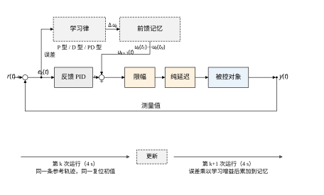
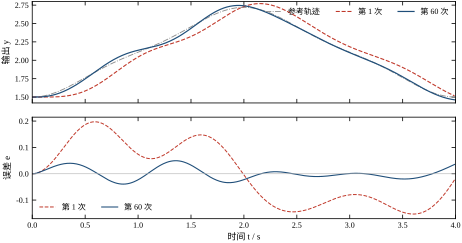
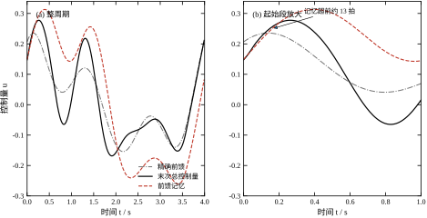
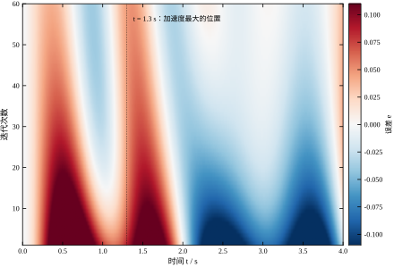
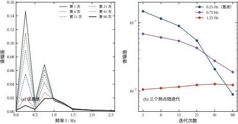
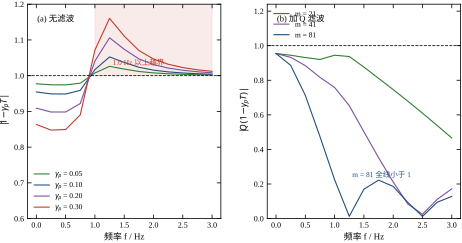
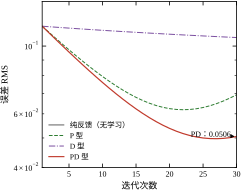
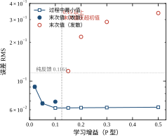
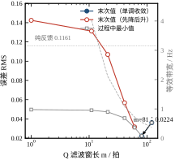
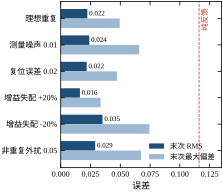

第 68 章的神经网络把“经验”压缩进 61 个权重，一次训练、终身使用。它有一个隐含前提：任务是不重复的。四段设定值各不相同，网络只能在“见过的工况”附近给出合理动作，学不到“这一次比上一次好在哪”。可工业现场有大量任务恰恰是重复的：机械臂每天抓同一批工件、数控机床每 3 秒走一遍同一个轮廓、注塑机每个模次执行同一条合模曲线、贴片机每块板子走同一条贴装路径。
对这类任务，“重复”本身就是一条被浪费掉的信息。第 44 章的 PID 每一遍都从零开始，上一遍的误差在程序里没有任何痕迹；第 58 章的 MPC 会预测未来，但预测完就把这一遍的偏差丢了。如果能把“上一遍错在哪”记下来、下一遍提前补上，那么同一条轨迹跑上几十遍之后，误差可以比任何固定参数控制器都小——而且不需要知道对象模型。这就是迭代学习控制（iterative learning control，ILC）。
本章的结论先说清楚：ILC 能把本章算例的跟踪误差从 0.1161 压到 0.0224，降幅 80.8%，代价是 60 次迭代、每条轨迹 4 s，也就是 4 分钟的“学习期”；它压不下去的那部分误差有明确的频域来源，可以被算出来，也可以被 Q 滤波剪掉，但剪掉高频的同时也剪掉了收敛速度。这条“用带宽换速度”的交换，是全章的主线。
设想一个人第一次骑自行车走一条窄路，会左右晃；第二次走同一条路，晃得少一些；第十次，几乎不晃了。这个过程里有三件事同时在发生：他记住了“哪个位置容易偏”，他在那个位置提前做了修正，而且他没有改变自行车的结构。ILC 就是把这三件事写成算法：记住上一条轨迹的误差、在同一个位置提前补偿、控制器结构不变。
把这个直觉形式化，需要两个轴。一个是时间轴 t，描述一次任务内部从 0 到 T 的过程；另一个是迭代轴 k，描述第几次执行。第 44 章的 PID 只在时间轴上工作，每个采样时刻独立算一次；ILC 多了一个轴，它允许“第 k+1 次在 t 时刻的动作”依赖“第 k 次在 t 时刻的误差”。这种跨迭代的信息传递在因果系统里是完全合法的，因为第 k 次已经跑完了，它的整条误差曲线都躺在内存里。
这个额外维度带来的能力很具体：PID 面对 5 拍纯延迟，只能靠降低增益换取稳定，因此必然留下稳态跟踪滞后；ILC 可以把“下一拍要发生什么”提前 5 拍写进前馈记忆，因为它在上一遍已经看过这 5 拍。换句话说，ILC 用“重复”换来了本来需要模型预测才能得到的前瞻信息。
图 69-1 是本章的结构。主回路上仍然是第 67 章那套反馈 PID：参考 r(t) 与测量值相减得到 e_k(t)，PID 算出反馈量，与前馈记忆 u_k(t) 相加，过限幅、过纯延迟，作用到对象上。多出来的部分在上方：误差被引到学习律，学习律按 P 型、D 型或 PD 型算出修正量 \Delta u_k，累加到记忆里，得到下一遍的 u_{k+1}(t)。

这张图里有两条通路值得分开看。周期内的通路（反馈）必须因果：第 t 拍的控制量只能用 t 拍及以前的测量。跨周期的通路（学习）不必因果：第 k+1 次在 t 拍的控制量可以用第 k 次在 t+\Delta 拍的误差，甚至用整条轨迹的误差。这条“非因果”的许可，是 ILC 全部能力的来源，也是它全部风险的来源——非因果的更新没有天然的稳定机制，必须靠增益与滤波器人为约束。
初学者容易把 ILC 与“重复控制”（repetitive control）混为一谈，两者确实都利用周期性，但用法完全不同。重复控制把周期信号的内模 1/(1-e^{-sT}) 串进反馈回路，是一条在时间轴上实时运行的控制器，它对每个周期内的扰动都做抑制，本质是“频率固定的谐振控制器”。ILC 则不在时间轴上增加任何环节，它只改“下一遍用什么前馈”，本质是“批间优化”。
这个区别带来三个实际后果。第一，重复控制要求扰动或参考严格周期，且周期已知；ILC 只要求“每次执行的是同一条有限长轨迹”，不要求轨迹本身是某个周期信号的截断。第二，重复控制对非周期扰动不敏感（它只认那个频率），ILC 会把非周期扰动误当成“要学的形状”，因此对噪声、复位误差、随机外扰更敏感，这正是 69.9 节要处理的问题。第三，重复控制在第 k 次执行中就能起作用，ILC 必须等第 k 次跑完才能更新，因此 ILC 的收益永远滞后一遍。
读到这里常有人问：既然 ILC 只是“在反馈上叠一份记忆”，为什么不把这部分活交给更强的反馈？把 PID 调到最好不就行了？
先看数字。第 68 章的参数网格里，纯反馈最好的一组是 (3.0,\,0.20)，RMS 能到 0.0797，比本章这组 (2.0,\,0.05,\,0.20) 的 0.1161 好 31%。可它离 ILC 的 0.0224 还差 3.6 倍——这 3.6 倍不是“再调调”能拿到的。
原因在灵敏度函数上。反馈的跟踪误差由 S=1/(1+CG_0) 在跟踪频点的模决定，环路增益大一个数量级，误差才小一个数量级。要把 0.0797 再降 3.6 倍，就得在 0.25 到 0.75 Hz 这一段的环路增益提高 3.6 倍，也就是 11 dB。可 50 ms 延迟在 0.75 Hz 就吃掉 13.5°、在 1.0 Hz 吃掉 18°，而对象本身（双积分器串一阶惯性）在 0.75 Hz 已滞后 157°。环路增益每加一倍，相位裕度就少一截，加到头就是振荡。
这条循环在频域里是闭合的：想降误差就要提高穿越频率，提高穿越频率就放大延迟的相位代价，代价一大又必须降增益。所以纯反馈的精度上限不是“调参水平”决定的，而是“延迟与对象相位”决定的。本章的 0.0797 已经贴着这条上限。
ILC 打破这个循环的办法不是“更大的增益”，而是“换一个轴”。它不在时间轴上提高环路增益，而是在迭代轴上累积：上一遍的整条误差在下一遍开始前已经完整拿到，这边界上不存在因果限制，也就不存在延迟。这就是为什么 400 个数的记忆能买到 3.6 倍于“最好反馈”的精度，代价只是 60 次重复。
ILC 不改变反馈回路的稳定性。它把前馈记忆叠加到指令上，反馈支路照旧工作；如果第 k 次的闭环本身是稳的，那么第 k+1 次在记忆正确的情况下也是稳的。ILC 带来的新风险只有一种：记忆本身可能收敛到一条错误的曲线，或者根本不收敛。前者表现为“学了一个歪的前馈，误差反而变大”，后者表现为“误差逐次增大直到贴住限幅”。
这两种失效都不会被“闭环稳定”这条判据发现，因为闭环在每个单独的时刻都是稳的。要看住它，必须盯三个量：整条轨迹的误差 RMS、控制量的饱和比例、以及误差谱的形状。本章 69.6 节会用一组实测数据说明，第三个量是最灵敏的——误差 RMS 还在下降的时候，某个高频分量可能已经在指数增长了。
算例沿用第 66 至 68 章的对象：y''=-2y'+K(y)u，K(y)=4+6y，工作区间内增益从 13 变到 20；采样 10 ms、纯延迟 5 拍、限幅 \pm1.2。任务是一条 4 s 的往复轨迹，每次迭代从同一位置复位、重跑同一条曲线。
这个对象有一个容易被忽略的性质：方程里没有 y 项，它是一个二阶无静差环节。常数输入下输出不会停在某个值，而是二次增长——实测把 u\equiv0.30 施加 4 s，输出从 1.5 涨到约 25。这个性质直接约束了参考轨迹的选法：轨迹在两端必须有零速度，否则第一拍就跟不上，任何前馈都救不回来。69.3 节会把这条约束讲透。
按 69.3 节的设计流程，最终得到的一组参数是：PD 型学习律 \gamma_p=0.10、\gamma_d=0.005，Q 滤波窗长 81 拍，反馈 PID 为 (2.0,\,0.05,\,0.20)。跑 60 次迭代后，误差 RMS 从 0.1161（纯反馈）降到 0.0224，最大偏差从 0.1974 降到 0.0495。作为参照，如果模型完全已知、直接用精确前馈 u^*=(r''+2r')/K(r)，误差 RMS 是 0.0593——ILC 在完全不知道 K(y) 的情况下，做到了比精确前馈还低。这个反直觉的结果在 69.4 节解释：ILC 学的是闭环的逆，不是对象的逆。
69.2 节给出学习律、误差递推与频域判据的数学；69.3 节把设计拆成六步，重点是参考轨迹与反馈支路的先决条件；69.4、69.5 节分别在连续与离散两种视角下看不带滤波的 ILC，前者解释“学到的到底是什么”，后者解释“记忆在内存里长什么样”；69.6 节用频域判据解释 1.25 Hz 分量的增长，这是全章技术含量最高的一节；69.7、69.8 节讨论三个参数的意义与调参顺序；69.9 节处理非重复扰动；69.10 节讲工程落地的重复性识别、过程监控与中止；69.11 节给边界；69.12 节是代码。
本章统一用 k 表示迭代序号，t 表示一次迭代内的时间，t_j=jT_s 表示第 j 个采样时刻，j=0,1,\dots,N-1，N=T/T_s=400。三个基本信号是参考 r(t)（与 k 无关，这是“重复”的含义）、输出 y_k(t)、误差 e_k(t)=r(t)-y_k(t)。前馈记忆记为 u_k(t)，它是一张长度为 N 的表，第 k 次执行时按拍查表。
需要强调的是 u_k 的下标含义：它标的是“第 k 次执行时用的前馈”，不是“第 k 次学出来的前馈”。按这个约定，第 k 次执行结束后算出的是 u_{k+1}。初值 u_0\equiv0，即第一次完全靠反馈——这一点很重要，它让 ILC 的第一次执行等价于纯反馈，给了一个天然的对照基线。
最一般的形式是“上一次的记忆 + 误差的某种变换”：
u_{k+1}(t)=Q\Bigl[u_k(t)+L\,e_k(t)\Bigr] \tag{69-1}
L 是学习算子，Q 是滤波算子。工程上 L 取三种最简单的形式，对应三种“学习律”：
\text{P 型：}\quad u_{k+1}(t)=Q\bigl[u_k(t)+\gamma_p e_k(t)\bigr] \tag{69-2}
\text{D 型：}\quad u_{k+1}(t)=Q\bigl[u_k(t)+\gamma_d \dot e_k(t)\bigr] \tag{69-3}
\text{PD 型：}\quad u_{k+1}(t)=Q\bigl[u_k(t)+\gamma_p e_k(t)+\gamma_d \dot e_k(t)\bigr] \tag{69-4}
三者的直观区别可以用“走山路”打比方。P 型只看“现在离路边多远”，走一步、量一次、再走一步；D 型只看“正在往哪边偏”，偏差为零但正在快速偏离时它也会修；PD 型两者都看。P 型的缺点是收敛慢——偏差小的时候修正量也小，越接近目标越磨蹭；D 型的缺点是对噪声敏感——差分把高频噪声放大，而记忆里一旦写进高频振荡，下一遍就会放大它。
这也解释了为什么第 44 章的 PID 里 D 作用要加低通：此处完全同理。本章的 D 型实现是“中心差分 + 一阶低通”，时间常数 30 ms，与第 67 章测量值微分的处理一致。
有一个地方容易困惑：P 型学习律只用了误差的比例，没有积分，凭什么能把误差压到零？在时间轴上，纯比例控制必有静差，这是第 44 章反复强调的结论。
原因在于“积分”发生在另一条轴上。固定某一拍 j，看这一拍的记忆随迭代序号怎么变：u_{k+1}[j]=u_k[j]+\gamma_p e_k[j]。这就是一个离散积分器，输入是 e_k[j]、输出是 u_k[j]、步长是 1、增益是 \gamma_p。所以 P 型 ILC 在时间轴上没有积分，在迭代轴上却是纯积分。零静差由此而来：只要迭代收敛，u_k[j] 必须停在某个常值上，而这个常值成立的必要条件是增量趋于零，即 e_\infty[j]\to0。“误差为零”不是靠某个环节“记住”了偏差，而是靠积分器在稳态时必须“输入为零”这条运动学约束。
按同样的看法，D 型与 PD 型在迭代轴上同样是积分器，时间轴上的微分只改变了积分器的输入形状，没有改变“积分”这件事。所以三种学习律都有零静差，区别只在收敛速度与相位——零静差是迭代轴上积分的必然结果，与时间轴上用什么律无关。
这条视角还顺带解释了两件事。第一，学习增益的符号不能错：积分器接上正反馈就会指数增长，这正是 69.8 节“误差完全不降”那一行症状的物理原因。第二，在时间轴上给学习律再加一个积分是错误方向：一来形状信息被抹平，ILC 最有价值的逐点修正能力消失；二来时间轴积分再添 90° 相位滞后，式 (69-8) 立刻更难过。ILC 的能力全部建立在“逐点”上，任何沿时间的平滑都必须放进 Q，而且必须是零相位的——这就是本节后面 Q 一定要用对称窗的原因。
要分析收敛，必须把“误差怎么随 k 变”写成显式关系。设对象与反馈构成的闭环算子是 T，即前馈 u_k 产生输出 T u_k（这里 T 已经包含了反馈支路的作用，不是单纯的对象）。若 u_0=0 时输出为 y_0=T_0 r，则
e_k=r-T u_k \tag{69-5}
代入 P 型学习律，并暂时取 Q=I：
e_{k+1}=e_k-\gamma_p T e_k=(I-\gamma_p T)e_k \tag{69-6}
这一步是整章的核心。它说明：误差的演化与参考无关，只与算子 (I-\gamma_p T) 有关。参考轨迹换成另一条，只要 T 不变，收敛性质完全一样；反过来，T 的性质决定了 ILC 能不能用、能用多快。式 (69-6) 还把“学习”翻译成了一个线性迭代：每学一次，误差被乘上一个算子。
对式 (69-6) 取范数，得到最常用的充分条件：
\lVert I-\gamma_p T\rVert<1 \tag{69-7}
只要这个算子范数小于 1，误差就按几何级数收敛到零。工程上更常用的是它的频域版本，因为 T 通常是线性时不变或可线性化的。对每个频率 \omega，把算子换成传递函数：
\bigl|1-\gamma_p T(j\omega)\bigr|<1,\qquad \forall \omega \tag{69-8}
这个条件有一个非常有用的几何解释。1-\gamma_p T(j\omega) 是复平面上“点 1”到“点 \gamma_p T(j\omega)”的距离。距离小于 1，意味着 \gamma_p T(j\omega) 落在以 1 为圆心、半径为 1 的圆内——也就是它的实部为正，且模不太大。
由此可以立刻读出两条工程规则。第一，T(j\omega) 的相位一旦超过 \pm90°，实部变负，\gamma_p 越大越危险；相位到 180° 时，任何正的 \gamma_p 都会让 |1-\gamma_p T|>1。第二，|T(j\omega)| 越大的频段越危险，因为同样的 \gamma_p 会把工作点推得更远。这两条在 69.6 节会被本章的数据逐条验证：临界频点 1.25 Hz 处，T 的相位是 -145.9°、模是 0.6263，\gamma_p=0.30 时 |1-\gamma_p T|=1.160，已经越界。
初次接触 ILC 的人常有一个疑问：对象传函 G_0(s) 已经知道，为什么不直接套式 (69-8)，非要再算一个闭环 T？答案是：判据里的算子必须是“记忆到输出”的整条通路，不是“控制量到输出”的那一段。用错了会给出方向完全相反的结论。
用本章的线性化模型算一遍就清楚。G_0 在 0.25 Hz 处模 4.131、相位 -132.65°，在 1.25 Hz 处模 0.259、相位 -188.21°。把它们代进式 (69-8)，取 \gamma_p=0.10：0.25 Hz 处 |1-0.10G_0|=1.315，1.25 Hz 处是 1.026。也就是说，开环判据会告诉你“基波处最危险、超标 31.5%”；更糟的是 0.25 Hz 的相位已经越过 -90°，该点 1-\gamma G_0 的实部恒大于 1，任何正的增益都不收敛。顺着这个结论走，ILC 在本章的对象上根本不能用。
实际情况恰好相反。同一频点上真正的闭环算子是 T=0.5256\angle-13.77°，|1-0.10T|=0.949，是全章收敛最快的地方；真正的危险频点在 1.25 Hz，|1-0.10T|=1.0525。两套判据给出的“最危险频率”差了五倍，“能不能用”的结论完全颠倒。
差别来自反馈。T=G_0/(1+CG_0) 在低频把模从 4.131 压到 0.5256（7.9 倍），把相位从 -132.65° 拉到 -13.77°；在高频却几乎不动，1.25 Hz 处 |T|=0.6263，反而比 |G_0| 的 0.259 大 2.4 倍。低频被反馈“扶正”、高频被反馈“顶高”，一升一降之后，最危险的频点自然从基波挪到了 1.25 Hz。
还有一条更根本的理由：G_0 是双积分器串一阶惯性，\omega\to0 时 |G_0|\to\infty，开环判据在直流处必然发散。可直流正是反馈跟踪最好的地方——有积分作用，稳态误差为零。一条在直流处就宣布“不可能”的判据，显然不能用来设计 ILC。这条反例可以推广成一句经验：判据要跟“误差实际流过的回路”对齐，而不是跟“最熟悉的那段传函”对齐。
式 (69-6) 里的 T 不是对象，也不是“对象乘 PID”，而是从记忆入口到测量输出的整条通路。按本章的实现，它依次包含：记忆与反馈输出相加的加法点、PID 支路（比例 2.0、积分 0.05、微分 0.20，微分作用在测量值上并串 30 ms 一阶低通）、限幅（线性化时视为未饱和）、5 拍纯延迟、在工作点 K=16.5 处线性化的对象，以及采样与零阶保持。
四处细节最容易漏。一是微分的低通：30 ms 在 1.25 Hz 处贡献 13.3° 相位，在 5 Hz 处到 43°，它决定了高频段的相位走向，不能按“30 ms 很短”忽略掉。二是延迟与采样必须一起算：5 拍延迟是 50 ms，零阶保持再贡献半拍 5 ms，两者相加才是 T 的真实滞后；只用 e^{-0.05s} 会低估 2.25°（1.25 Hz 处）。三是限幅：饱和时 T 不再是线性算子，判据失效，这也是 69.10 节把“饱和比例”列为监控量的原因。四是积分器：k_i=0.05 让 C 在低频趋于无穷，这才使 T 的低频模不等于 G_0 的低频模。
工程上不必手推这个乘积。本章的做法是实测：把一段正弦注入记忆通道，等两个周期进入稳态，再对稳态段做 DFT，取“输出复数比输入复数”作为 T(\mathrm{j}\omega)。这样得到的 T 自动包含上面四处细节，也自动包含实现里任何没想到的东西，比如查表时用的线性插值。代码见 69.12 节的 loop_freqresp，它用同一条闭环仿真跑到稳态，一次算出全部频点。
最后一个必须承认的近似：T 依赖工作点。本章的 K(y) 沿轨迹从 13 变到 20，所以严格说 T 在同一条轨迹内就是变的，判据只在某个“等效工作点”上成立，取 K=16.5（轨迹中段）是一种折中。69.9 节的增益失配实验给了这个近似的余量：K 偏大 20% 时末次误差 0.0161（反而更小），偏小 20% 时 0.0351（变大但仍收敛）。这说明判据虽是局部的，作为设计工具已经够用——它定的是“量级与位置”，不是“精确的临界值”。
既然高频段注定越界，与其把 \gamma_p 压到全局都很小（低频也跟着变慢），不如“只在能学的频段学”。这就是 Q 的作用：
u_{k+1}=u_k+Q\,\gamma_p e_k,\qquad \lvert Q(j\omega)\rvert\le1 \tag{69-9}
注意 Q 作用在学习增量上，不是作用在整条记忆上。这两种写法有实质区别：若写成 u_{k+1}=Q[u_k+\gamma_p e_k]，高频段的记忆会每遍被清零，等价于“每遍退回纯反馈”；而且误差递推里会多出一个 (1-Q)e_{fb} 的强迫项（e_{fb} 是纯反馈误差），分析起来更绕。式 (69-9) 的写法让高频记忆“保持上一遍的值”，误差既不发散也不被清零，正好是工程上想要的“冻结”。
加了 Q 之后，误差递推变成
e_{k+1}=\bigl(I-\gamma_p TQ\bigr)e_k \tag{69-10}
收敛条件相应变成
\bigl|1-\gamma_p Q(j\omega)T(j\omega)\bigr|<1 \tag{69-11}
注意这里不是简单的“|Q| 乘上去”，而是 Q 与 T 相乘后再减。当 Q 是零相位滤波器时，Q(j\omega) 是实数，式 (69-11) 化简为
\bigl|1-\gamma_p Q(\omega)T(j\omega)\bigr|<1 \tag{69-12}
它在低频（Q\approx1）退化成原来的判据，在高频（Q\approx0）退化成 |1-0|=1——既不收敛也不发散，误差停在那里不动。这个“退化成 1”的性质很关键：Q 滤波不是把高频误差压小，而是让高频误差不再变化。所以 Q 窗长选得太长，会看到“前 20 次降得很快，然后停在一个非零的地板上”，而不是“一路降到零”。
本章用的是零相位滑动平均，长度 m 拍、对称窗、两端按边缘值延拓：
Q(z)=\frac{1}{m}\sum_{i=0}^{m-1}z^{-(i-\frac{m-1}{2})} \tag{69-13}
因为整条轨迹已经在迭代域里存好，这个窗可以“居中”处理，不引入相位滞后——这是 ILC 相对实时滤波的一个实实在在的好处。它的幅度响应是 Dirichlet 核，第一个零点在 f=1/(mT_s)，等效截止频率约 0.443/(mT_s)。窗长 81 拍对应 0.55 Hz，窗长 21 拍对应 2.11 Hz。
式 (69-6) 是线性迭代，若把算子换成标量近似，误差按 e_k\approx\rho^k e_0 衰减，\rho 叫收敛因子：
\rho=\max_{\omega}\bigl|1-Q(\omega)\bigl(1-\gamma_p T(j\omega)\bigr)\bigr| \tag{69-14}
要把误差压到初值的 \varepsilon 倍，需要
k\ge\frac{\ln\varepsilon}{\ln\rho} \tag{69-15}
次迭代。这条式子解释了本章所有“慢”的现象。\rho=0.99 时，降到 1% 要 458 次；\rho=0.95 时要 90 次；\rho=0.90 时只要 44 次。实测的几何比与这个估计吻合：\gamma_p=0.02 时实测 0.991，\gamma_p=0.10 时 0.957，\gamma_p=0.15 时 0.937——增益每翻一倍，\rho 大致按 1-\gamma_p\bar{T} 线性下降，其中 \bar{T} 是低频段 T 的加权平均模。
这里有一个容易犯的错误：把 \rho 当成“整条轨迹的收敛速度”。实际上 \rho 是频域上的最大值，它由最难学的那个频点决定，通常不是基波。本章算例里，无滤波时 0.25 Hz 的收敛因子是 0.949、1.25 Hz 是 1.053；加上 81 拍 Q 滤波后，前者变成 0.952（略慢一点），后者降到 1.001（几乎冻结）。同一个学习律在两个频点上做的是相反的事：一个在往里收，一个被按住了。这就是为什么只看 RMS 的速度会误判整条轨迹的命运——无滤波时 1.053 那一项会让误差在 30 次后重新涨起来，而 0.949 那一项一直在降，两者叠加的结果是一条先降后升的曲线。
ILC 的第一道门槛不是算法，是任务。判断“重复”要看三件事，缺一不可。参考轨迹相同：每次执行的目标曲线必须是同一条，允许起点、终点不同，但不允许“这次走矩形、下次走圆”。初始条件相同：每次开始前必须复位到同一状态，位置、速度都要，只复位位置而速度带着上一遍的残余，等于每次都在不同的初始条件下学习。扰动近似相同：负载、摩擦、温度在一个批次内变化不大；如果每次的外扰都是独立的随机量，ILC 会把噪声学进记忆。
三条里最容易忽略的是第二条。工程上“复位”往往只做位置回零，速度靠自然停稳，于是每次的初速度有微小差别。本章实测，把复位误差设为标准差 0.02 的随机量（相对轨迹幅值 1.22 约 1.6%），末次误差是 0.0218，与理想重复的 0.0224 基本持平——这个结果只在加了 Q 滤波之后成立。复位误差是“每遍都不重复”的低频扰动，而低频恰好是 ILC 学得最快的频段；若不加 Q 滤波，它会被学进记忆，表现为记忆里出现一条与轨迹无关的慢漂移，下一遍不仅没补上，反而把这一遍的偏差固化了。
迭代长度 T 要覆盖完整任务，且必须是采样周期的整数倍。本章取 T=4 s、T_s=10 ms，于是 N=400。N 决定了记忆的大小（400 个双精度数，3.1 KB），也决定了频域分辨率 \Delta f=1/T=0.25 Hz——这个数字后面会反复出现，因为本章所有的谱分析都只能分辨 0.25 Hz 的整数倍。
复位方式有两种。硬复位：每次结束把执行机构拉回起点，等待稳定，再开始下一次。软复位：不复位，让轨迹首尾相接形成循环。硬复位适合点位任务，软复位适合连续旋转的场合（如主轴、输送带）。本章用硬复位，因为它让“初始条件相同”这条最容易满足，也让误差的定义没有歧义。软复位的麻烦在于：首尾必须满足周期性边界条件，否则接缝处的跳变会被当成误差学进去。
这一步是本章踩坑最多的地方，值得单独讲。参考轨迹
r(t)=R_0+A_1\bigl(1-\cos\omega t\bigr)+A_3\bigl(1-\cos 3\omega t\bigr),\qquad \omega=\frac{2\pi}{T} \tag{69-16}
取 R_0=1.50、A_1=0.55、A_3=0.06，轨迹范围 [1.500,\,2.720]，基波 0.25 Hz、三次谐波 0.75 Hz。三个参数各有约束。
为什么是余弦型而不是正弦型。 最初的设计是 r=1.0\sin(\pi t/2)+0.2\sin(3\pi t/2)，起点 r(0)=0 但 r'(0)=1.57。这个轨迹让 ILC 全线发散：精确前馈的 RMS 高达 0.504，P 型学习的误差从 0.60 涨到 0.98。原因不是算法错，是轨迹与初始条件不自洽——每次从静止复位，第一拍的速度是 0，而轨迹要求 1.57，这个矛盾无法用任何前馈弥补。改成余弦型后 r'(0)=r'(T)=0，精确前馈的 RMS 立刻降到 0.0593。
为什么起点要抬到 1.5。 对象的增益 K(y)=4+6y 在 y=-2/3 处过零。轨迹若跨过这一点，逆 u=(r''+2r')/K(r) 在该点附近会炸掉——第一次试算时轨迹跨零，u^* 的最大值到了 5\times10^4，RMS 3131。这不是数值问题，是物理问题：K 变号意味着“正输入产生负加速度”，逆不唯一。把轨迹整体抬到 K\in[13,20] 的正增益区间，逆就唯一且平缓。
为什么要有三次谐波。 纯基波的轨迹太“软”，任何控制器都能跟得差不多，看不出 ILC 的价值。加 6% 的三次谐波，让轨迹有加速度突变，逼出反馈的滞后。本章所有误差的主要成分就落在这个 0.75 Hz 分量上。
ILC 是“叠加在反馈之上”的，它的收敛性质由闭环算子 T 决定，而 T 由反馈参数决定。所以顺序必须是：先把反馈调到最好，再开学习。反过来做——反馈很弱、靠 ILC 硬补——会得到一个“低频靠记忆、高频靠噪声”的系统，一旦记忆失效就没有兜底。
本章的反馈沿用第 67 章的结构：u_{fb}=k_p e+k_i\int e-k_d\dot y_f，微分作用在测量值上。参数取 (2.0,\,0.05,\,0.20)。这组参数不是最优的——第 68 章的网格里，(3.0,\,0.20) 的纯反馈 RMS 能到 0.0797，比本章的 0.1161 更低。为什么不用更激进的那组？因为它把闭环带宽推得更高，T 在 1.25 Hz 附近的相位更靠后，ILC 的可学频段反而变窄。这是反馈与学习之间的一处真实权衡：反馈调得越猛，ILC 能加的益越少。
初始增益按“半步法则”起步：先取一个明显偏小的值，看误差是否单调下降，再逐步加大直到出现“先降后升”，然后退回上一档的 60%。本章的实测边界很清晰：P 型在 \gamma_p=0.10 时 30 次迭代到 0.0693，\gamma_p=0.15 时 30 次后反超初值（0.1196），因此 \gamma_p 的可用上限在 0.10 附近。PD 型在同样的 \gamma_p 下加 \gamma_d=0.005，末端降到 0.0506。
学习律的选择看误差的成分。若误差主要是“慢漂移”（低频），P 型足够；若误差主要是“相位滞后”（误差与速度同相），D 型更有效；本章的误差两者都有，PD 最好。这个判断不需要试三种，只要看第一次迭代的误差与参考速度的互相关：同相则 P，正交则 D。
最后一步加 Q 滤波，窗长从一个“刚好能通过轨迹最高谐波”的值起步。轨迹最高是 0.75 Hz，窗长 41 拍的等效带宽 1.08 Hz，刚好够；先取 41，再往长调到“末端误差不再下降”为止。本章最终取 81 拍（0.55 Hz），因为它把 1.25 Hz 压到了 0.012，而 0.75 Hz 还剩 0.494——牺牲一部分三次谐波的可学性，换来整条轨迹的单调收敛。
验收要看四件事：误差 RMS 是否单调下降、最大偏差是否同向下降、控制量饱和比例是否为零、误差谱是否所有分量都在降。表 69-1 是完整的参数清单。
| 项目 | 取值 | 说明 |
|---|---|---|
| 采样周期 T_s | 10 ms | 与第 66 至 68 章一致 |
| 迭代长度 T | 4 s | N=400 拍，频率分辨率 0.25 Hz |
| 纯延迟 | 5 拍 | 50 ms，落在学习环内 |
| 限幅 | \pm1.2 | 与前三章一致 |
| 参考轨迹 | 式 (69-16) | 范围 [1.500,\,2.720] |
| 反馈 PID | (2.0,\,0.05,\,0.20) | 先单独调好 |
| 学习律 | PD，\gamma_p=0.10、\gamma_d=0.005 | 差分后接 30 ms 低通 |
| Q 滤波 | 对称滑动平均，81 拍 | 等效带宽 0.55 Hz |
| 迭代次数 | 60 | 4 分钟学习期 |
| 初值 | u_0\equiv0 | 第一次等价于纯反馈 |
设计完成后先跑一次验收：图 69-2 是第 1 次与第 60 次的跟踪过程与误差。上图里第 1 次的输出（红虚线）在上升段明显落后于参考，峰值处差约 0.2；第 60 次（黑实线）几乎贴在参考上，只在 t = 1.3 s 附近还有一点过冲。下图的误差更能说明问题：第 1 次的误差是一条“先负后正再负”的波浪，幅值 -0.19 到 +0.12；第 60 次压到 \pm0.05 以内，且形状变成了“高频小幅抖动”——这正是 Q 滤波留下的、没能学掉的频段。

这张图还暴露了一个容易被忽略的细节：误差最大的位置不在轨迹的峰值（t=2 s），而在 t=1.3 s。原因是峰值处速度为零、加速度最大，而 t=1.3 s 处速度与加速度都不小，闭环的动态滞后在这里累积得最多。69.6 节会说明，这个位置也正是三次谐波（0.75 Hz）能量最集中的地方。
把式 (69-2) 的下标换成连续时间，就得到连续形式的 P 型学习律：
u_{k+1}(t)=u_k(t)+\gamma_p\,e_k(t),\qquad t\in[0,\,T] \tag{69-17}
注意它不是微分方程。式子里没有 \mathrm{d}u/\mathrm{d}t，也没有 \mathrm{d}u/\mathrm{d}k；它定义的是两条曲线之间的逐点加法。这一点常被误解为“ILC 是某种自适应律”，其实两者在结构上完全不同：自适应律用 \dot\theta=\Gamma e\phi 让参数沿时间连续演化，参数在任务执行过程中就在变；ILC 的更新发生在任务与任务之间，一次执行之内 u_k(t) 是一条固定的曲线，不随 t 变化。
这个区别决定了实现方式。自适应律必须在控制器里跑一个积分器，每个采样周期都要算；ILC 只需要两张表——上一遍的表和这一遍的表——执行时查表，执行完更新。也正因如此，ILC 对实时算力的要求几乎为零：本章的实测是单次迭代 2.82 ms（400 拍、每拍 5 次子步的完整非线性仿真），真正在控制器上运行的只有查表与一次加法。
把式 (69-17) 代入误差定义，连续域得到与式 (69-6) 同构的递推：
e_{k+1}(t)=\bigl[I-\gamma_p G\bigr]e_k(t) \tag{69-18}
其中 G 是从前馈到输出的闭环算子。连续域的收敛条件同样是一个范数条件 \lVert I-\gamma_p G\rVert<1，频域上写作
\bigl|1-\gamma_p G(j\omega)\bigr|<1,\qquad \forall\omega \tag{69-19}
式 (69-19) 与式 (69-8) 形式一样，但 G(j\omega) 与 T(j\omega) 的内容不同：T 是离散闭环、含采样与零阶保持，G 是连续闭环。两者的形状相近，差别在 1 Hz 以上——采样与保持带来的半拍相位在连续域是看不见的，这也是为什么连续域的分析只能给方向，量化必须用离散模型。
式 (69-17) 是两条曲线之间的逐点加法，属于函数空间里的运算。落到离散实现上只做两件事：把 [0,T] 切成 400 段，段内用常值代替（等价于零阶保持）；把函数换成 400 维向量。这两件事会引入两类误差，都值得算清楚。
第一类是分段常数带来的等效延迟。 一段常值要维持一个采样周期，平均滞后半拍，即 5 ms；在 1.25 Hz 处折合 2.25°，在 0.25 Hz 处折合 0.45°。与 5 拍纯延迟的 22.5° 相比小一个数量级，不影响任何结论。但若为了省内存把采样周期放宽到 20 ms，这半拍就变成 4.5°，与延迟本身的贡献同量级，判据必须重算。
第二类是混叠。 100 Hz 采样的折叠频率是 50 Hz，本章关心的 0.75 Hz 与 1.25 Hz 都远低于它，不存在混叠。真正要防的是现场噪声：50 Hz 工频在 100 Hz 采样下正好落在折叠边界，会被折到直流，表现为“记忆随运行时间缓慢漂移”——一个在误差谱上看不见、在记忆曲线上却很明显的东西。对策是模拟端先做 50 Hz 陷波，或提高采样率让 50 Hz 远离折叠点。
还有一个常被忽略的点是频率分辨率。400 点、4 s 的记录，DFT 只能给出 0.25 Hz 整数倍上的谱线。本章报的 0.25、0.50、0.75、1.00、1.25 Hz 全是这个格子上的点，这不是巧合，而是“只能测到这些”。若想区分 1.20 Hz 与 1.25 Hz 的行为差异，必须把迭代周期拉长到 20 s，而不是把采样率提高十倍——提高采样率只加了点数，没有加时长，分辨率仍是 1/T。
这三条合起来说明：离散化不是“精度差一点”的问题，而是改变了可测与可学的对象。实现时先确认采样周期与迭代长度，再谈增益与滤波；顺序反了，后面的参数全部白调。
本章对象的线性化传函是
G_0(s)=\frac{K}{s^2+2s},\qquad K\approx16.5 \tag{69-20}
它是一个双积分器串一个一阶惯性，低频增益无穷大（这是“无静差”的来源），相位从 -90° 一路走向 -180°。加上 5 拍（0.05 s）纯延迟，相位再减 \omega T_d。表 69-2 就是这笔相位账。
| 频率 / Hz | G_0 相位 / ° | 延迟相位 / ° | 合计 / ° | |G_0| |
|---|---|---|---|---|
| 0.25 | -128.15 | -4.50 | -132.65 | 4.131 |
| 0.50 | -147.52 | -9.00 | -156.52 | 1.410 |
| 0.75 | -157.00 | -13.50 | -170.50 | 0.684 |
| 1.00 | -162.34 | -18.00 | -180.34 | 0.398 |
| 1.25 | -165.71 | -22.50 | -188.21 | 0.259 |
| 1.50 | -168.02 | -27.00 | -195.02 | 0.182 |
这张表一眼就能看出问题所在：1.0 Hz 附近相位已经越过 -180°，此后任何正的学习增益都会让 |1-\gamma G|>1。延迟在其中的贡献随频率线性增长，1.25 Hz 时已经吃掉 22.5°，占总相位超出的三分之一。这也解释了一个常见的误解：以为“延迟不大，只占 50 ms，可以忽略”。在时间域 50 ms 确实很短，但在相位域，它对 1 Hz 以上的分量是决定性的。
从这张表还能读出“为什么低频能学”。0.25 Hz 处相位只有 -132.65°，离 -180° 还有 47° 余量，|1-\gamma G| 由 1-\gamma|G|\cos(132.65°) 主导，只要 \gamma|G|<2\cos(47°)\approx1.36 就收敛。本章 0.25 Hz 处 |G_0|=4.13，于是 \gamma<0.33 都安全——实测的上限 0.15 比这个保守，因为实际闭环还叠加了反馈支路与采样的相位，安全余量必须打对折。
如果模型完全已知，跟踪问题的经典解法是“逆模型前馈”。由 y''=-2y'+K(y)u 反解：
u^*(t)=\frac{r''(t)+2r'(t)}{K\bigl(r(t)\bigr)} \tag{69-21}
把式 (69-16) 的轨迹代进去，得到 u^* 的范围 [-0.154,\,0.236]，RMS 0.1166。这个前馈直接作用在对象上、不加反馈时，误差 RMS 是 0.0625；考虑 5 拍延迟并把 u^* 相应后移 5 拍，RMS 是 0.0593。这就是“知道模型”能给的全部收益，它已经把轨迹的加速度与速度都补偿掉了，剩下的是延迟与采样造成的高频残差。
于是本章出现了一个值得停下来想一想的数字：ILC 末次的误差 0.0224，比精确前馈的 0.0593 低了 62%。ILC 完全不知道 K(y)，它只是把上一遍的误差加到记忆里，怎么会比“精确”前馈还准？
答案在式 (69-5) 里：e_k=r-Tu_k，T 是闭环算子，不是对象 G_0。所以 ILC 收敛到的记忆满足 Tu_\infty=r，即 u_\infty=T^{-1}r，是闭环的逆。而式 (69-21) 给的 u^* 是 G_0^{-1}r，是对象的逆。两者差了一个反馈闭环：T=G_0/(1+C G_0)，于是
u_\infty=T^{-1}r=\frac{1+C G_0}{G_0}r=u^*+C r \tag{69-22}
也就是说，记忆里最终存的是“对象逆 + 反馈支路在跟踪这条轨迹时输出的那一份”。反馈支路有相位滞后，它在轨迹的上升段输出偏小、下降段输出偏大；记忆把这一份补了进去，于是“记忆 + 反馈”的合计正好等于对象逆。图 69-10 是这条结论的实测证据。

图里三条曲线：灰点划线是精确前馈 u^*，黑实线是末次的总控制量（记忆加反馈），红虚线是记忆本身。在全周期上，黑线与灰线几乎重合；在起始段放大图里，红线明显走在灰线前面。定量地看，0.25 Hz 基波上三者是：u^* 幅值 0.1352、相位 -50.87°；总控制量 0.1358、-49.40°；记忆 0.2710、-76.08°。总控制量与精确前馈的幅值差 0.4%、相位差 1.5°，而记忆的幅值是它的两倍、相位超前 26°（约 13 拍）。
这 13 拍不是巧合，它约等于反馈支路在本轨迹上的等效滞后：比例 2.0、积分 0.05、微分 0.20 的 PID 在 0.25 Hz 处的相位约 -26°，折算到 4 s 周期正好是 0.29 s，接近 13 拍。记忆先把这份滞后“预支”出去，反馈再把它还回来，两者相加才等于对象需要的输入。
这条结论有很强的工程含义：不能拿 ILC 收敛后的记忆去直接比对模型逆，也不能把记忆单独抽出来当“学到的模型”。记忆只有和反馈合在一起才有物理意义。反过来，如果现场把反馈参数改了而没有清空记忆，记忆里预支的那一份就对不上了，误差会先跳一下再重新收敛——这是 69.10 节“记忆版本管理”要求的直接理由。
记忆 u_k 与控制量同量纲，因为它最终要与反馈输出相加后送进执行器。这一点在纸上是自明的，在工程上却是最常见的错误来源：控制器内部用 mA、上位机显示用 %、机械图纸用 N，三套单位只要有一处漏乘，学出来的记忆就整体差 10 倍或 100 倍。
量纲错了不会立刻“崩”，ILC 会照常收敛到“误差最小”，只是那个最小点被限幅卡住，或者前馈量级离谱。判断的办法有两个。一是先算 u^*：式 (69-21) 给出的 RMS 是 0.1166、范围 [-0.154,\,0.236]，学到的记忆应当与它同量级。二是看两者的比例：本章学到的记忆 RMS 是 0.2070，是 u^* 的 1.78 倍，多出来的这一份正是反馈支路预支的滞后（见上一小节）。所以“记忆 RMS 落在 u^* 的 1.5 到 2 倍之间”可以作为量纲正确的一条粗判据；若差 10 倍以上，先查单位，不要调增益。
存储量的账顺便算一下：400 个双精度数是 3.1 KB，双缓冲要两份，加上时间戳与版本号，一个品种约 8 KB。一百个品种 800 KB，任何控制器都放得下。真正占空间的不是记忆本身，而是“为了可追溯保留的每遍误差日志”——400 点 × 60 遍 × 8 字节 = 192 KB，比记忆大两个数量级。若日志要长期保留，就得按“首末两遍全存、中间每 10 遍存一次”的方式抽样。
连续域的分析虽然不能给出精确的量化，但它给了三条在实现时必须遵守的约束。
第一条：采样率要显著高于想学的最高频率。 本章想学到 1.25 Hz 附近，采样 100 Hz，一个周期 80 点，足够；若要学到 10 Hz，10 ms 的采样就只剩 10 点，差分求导完全失真，必须提高采样率或改用更长的学习窗。
第二条：D 型学习律必须先低通再差分，或差分后立刻低通。 连续域的 \dot e 是理想微分，增益随频率无限增长；离散实现里中心差分的幅频特性是 \sin(\omega T_s)/T_s，在奈奎斯特附近会折叠。本章的做法是差分后接 30 ms 一阶低通，它在 1.25 Hz 处的衰减只有 4%，在 10 Hz 处衰减 70%，正好把不该学的高频挡在外面。
第三条：连续律假设整条误差曲线在执行结束后仍然可访问。 这在仿真里天然成立，在实机上要求控制器把整条轨迹的误差存下来（400 个浮点数，3.1 KB）。若内存受限只能存抽样点，那么可学带宽就按抽样率减半，Q 滤波的窗长也要相应放大。
离散实现把式 (69-17) 写成按拍的更新：
u_{k+1}[j]=u_k[j]+\gamma_p e_k[j]+\gamma_d\,\dot e_k[j],\qquad j=0,1,\dots,N-1 \tag{69-23}
再对整条序列做 Q 滤波并限幅：
u_{k+1}\leftarrow\operatorname{clip}\bigl(Q\,u_{k+1},\,-u_{\max},\,u_{\max}\bigr) \tag{69-24}
这两步的顺序不能换。先滤波后限幅，滤波器的输出会被限幅截断，但截断只影响已经越界的点，不会通过滤波器扩散到邻近点；先限幅后滤波，滤波会把越界点的值“抹”到邻近点上，造成一段连续的平台——本章早期版本犯过这个错，结果误差在饱和区附近出现一条 0.3 s 长的平顶，看起来像“对象卡住了”，实际是滤波把饱和抹开了。
更新完的 u_{k+1} 就是下一遍要查的表。它的长度固定为 N，与迭代次数无关；60 次迭代不会让记忆变长，只会让它变准。这是 ILC 与“在线学习”的又一处区别：在线学习的参数量固定但样本无限，ILC 的样本数固定（每条轨迹 400 点）而迭代次数可以很多。
初学者容易把“迭代”和“采样”混成一个概念，以为迭代次数多了就相当于在迭代轴上提高了采样率。这两条轴的性质完全不同，混了会得出错误的设计结论。
时间轴上有采样周期 T_s=10 ms，它决定能表示的最高频率 50 Hz，也决定离散化引入的半拍相位。迭代轴上没有“采样率”这回事：第 k 遍与第 k+1 遍之间不存在任何信号，控制器不会去插值两遍之间的状态，也不需要在遍与遍之间维持什么动态。迭代次数只是几何级数的项数，它决定“把误差乘多少次 \lambda”，不决定“能学多高的频率”。
一个常见的误推是：“迭代 60 次，相当于在迭代轴上采了 60 点，所以能学 30 遍一周的振荡。”这个说法没有意义——ILC 从不处理“遍与遍之间的振荡”，它的状态只有一张表，表的更新是代数加法，不是差分方程。真正限制可学带宽的是每次迭代内的采样与闭环频响，也就是 69.6 节的判据。
由此还能得到一个反直觉的推论：迭代次数不能靠“跑得更快”来换。每次迭代必须完整跑一遍 4 s 的轨迹，想多学 10 遍就得多等 40 s，没有别的办法。这与“提高采样率能加快收敛”的直觉正好相反——在本章里，提高采样率只会让单次迭代更贵，收敛所需的遍数一点不变。
有一个实现细节会影响收敛的前几拍：误差用的是“当前拍的测量值”还是“上一拍的测量值”。本章用当前拍，即 e[j]=r[j]-y[j]，其中 y[j] 是本拍采样结束后的输出。这与第 67 章的写法一致，代价是控制量在计算时用的是本拍的测量，实机上这一拍的计算必须在该采样周期内完成（本章 2.82 ms 的仿真时间远小于 10 ms，留有余量）。
若实机的计算来不及，退而用上一拍的测量，等效于在整个学习环里多加一拍延迟。这一拍在低频无所谓（0.25 Hz 处只多 0.9° 相位），但在 1.25 Hz 处多 4.5°，足以把原本勉强收敛的频点推过界。所以“计算延迟”在 ILC 里的地位比在 PID 里更高：PID 多一拍只是裕度变小，ILC 多一拍可能直接改变收敛性。
5 拍纯延迟对 ILC 的影响，与对 PID 的影响性质不同。对 PID，延迟消耗相位裕度，表现是“增益不敢调大”；对 ILC，延迟直接进入 T(j\omega)，改变的是“哪个频段能学”。本章的实测给出了一个反直觉的结果：把误差前移若干拍再进学习律（所谓超前补偿），并不能改善收敛，反而更差。
试过的方案是把 e_k 前移 3、5、8、12 拍，再代入学习律，相当于用“未来的误差”做修正。结果是前移 0 拍最好，前移越多误差越大——在另外一种配置下，0 拍时误差 0.0355，前移 5 拍变成 0.0622，前移 8 拍变成 0.1082，几乎翻倍。原因在式 (69-6)：超前补偿改变的是 T 的相位，把相位往前推，看似补了延迟，实际上把 1-\gamma T 的工作点推到了更接近 1 的位置，收缩变慢；同时它把高频段的相位搅乱，让原本已经越界的频段越界更多。
真正的对策有两条，都在频域上：降低 \gamma 让整条曲线整体靠近 1 但不越过，加 Q 滤波把越界频段直接剪掉。前者牺牲速度，后者牺牲带宽，没有第三条路。这条结论在 69.6 节会被谱数据完全印证。
式 (69-24) 里的限幅是 ILC 唯一的强非线性环节，它的作用方式与 PID 里的限幅不同。PID 的限幅保护执行器，饱和时通过抗饱和逻辑回退积分；ILC 的限幅保护的是“记忆不要长出一条荒谬的曲线”，一旦触发，式 (69-6) 的线性递推立刻失效——因为被截断的那部分误差无法通过学习消除，下一遍还会产生同样的误差，再被截断。
这会造成一种特殊的失效模式：记忆在饱和区附近来回抖动，误差不增不减。本章 69.6 节会给出它的定量标志——饱和比例。纯反馈的饱和比例是 0，\gamma_p=0.30 发散后升到 51.2%，而正式算例（PD + Q81）全程为 0。这条指标比误差更早报警：误差还在 0.1 附近“看起来正常”的时候，饱和比例可能已经从 0 涨到 3%。
本章的代码用双精度浮点，量化误差完全可以忽略。但现场控制器常用 16 位定点（DSP 的整数运算、部分 PLC），这时要算一笔新账：量化会把“学习停住”的位置抬高。
先看测量端。若 ADC 是 16 位、量程 \pm1.2，一个 LSB 是 2.4/65536=3.66\times10^{-5}。学习增量是 \gamma_p e，当 |e| 降到 3.66\times10^{-4} 时增量只有 3.7\times10^{-5}，与一个 LSB 相当；误差再小，增量就会被四舍五入掉，学习事实上停止。这个阈值 |e|<\mathrm{LSB}/\gamma_p 就是定点实现的学习地板。
把它和浮点地板放在一起看：本章末次 RMS 是 0.0224，\gamma_p=0.10 对应的定点地板是 3.7\times10^{-3}，比它小一个数量级，够用。若为了压高频把 \gamma_p 取到 0.005，地板抬到 7.3\times10^{-3}，仍低于本章的浮点地板，本算例不成为瓶颈；但换一个重复性更好的对象（浮点地板能到 10^{-3} 量级），定点地板就会变成新的限制。所以量化不是“总能忽略”的小事，它取决于你打算学到多细。
对策有两条，成本都很低。第一，记忆用单精度浮点存，相对精度 10^{-7}，相对 0.2 的量级是 2\times10^{-8}，完全够；第二，若必须用定点，就让增量在高精度累加器里累加，只在查表输出时取整，把“每拍截断一次”变成“每遍截断一次”，地板随之降下来。
把离散实现的成本算清楚，有助于判断它能不能落在实时预算里。一次迭代包含：400 拍 × 每拍 5 次子步的对象积分、一次 400 点的 Q 滤波（用卷积实现）、一次 400 点的差分与低通。本章在 Python 里实测 60 次迭代 169.3 ms，单次 2.82 ms；其中对象积分占九成以上，学习律本身不到 0.1 ms。
这个比例说明：ILC 的算力开销几乎全在“跑一遍任务”上，而这一遍本来就要跑。真正新增的只有学习律与滤波，量级是微秒。所以在实机上，ILC 的算力门槛基本可以忽略；真正的门槛是内存（要存整条轨迹的误差与记忆）与“任务必须可重复”这个前提。
表 69-3 是四种配置的实测结果，统一 30 次迭代、统一反馈支路、都不加 Q 滤波，这样比较的是学习律本身。
| 学习律 | 首次 RMS | 第 5 次 | 末次 RMS | 最小 RMS | 末次最大偏差 | 降幅 |
|---|---|---|---|---|---|---|
| 纯反馈（无学习） | 0.1161 | 0.1161 | 0.1161 | 0.1161 | 0.1974 | 0 |
| P 型 \gamma_p=0.10 | 0.1161 | 0.0972 | 0.0693 | 0.0619 | 0.1538 | 40.4% |
| D 型 \gamma_d=0.005 | 0.1161 | 0.1145 | 0.1066 | 0.1066 | 0.1609 | 8.2% |
| PD 型 0.10/0.005 | 0.1161 | 0.0956 | 0.0506 | 0.0497 | 0.1167 | 56.5% |
三个数字值得注意。P 型 30 次到 0.0693，但它不是单调的：第 21 次到最低 0.0619，之后回升到 0.0693——这就是 1.25 Hz 分量在暗中增长的开始。D 型几乎没用，30 次只降 8.2%，因为它学的是误差的导数，而本章误差的主要成分是“滞后形状”，导数在整条轨迹上正负相抵，累积量很小。PD 型最好，但它末次的最大偏差 0.1167 仍然不小，说明误差的峰值没有被压下去，压下去的是“平均”。
这三条合起来说明：学习律的选择不能只看末次 RMS，还要看单调性与最大偏差。同一张表里，P 型的“最小值”比“末次值”低 0.0074，这个差值就是发散分量的贡献；工程上若只报末次值，会低估风险。
图 69-3 把 60 次迭代的误差画成一张热图：横轴是迭代内的时间，纵轴是迭代次数，颜色是误差。这张图比任何曲线都直观地说明了 ILC 在做什么。

前 10 次，深色（大误差）区域集中在 t=0.6 到 1.6 s 与 t=2.4 到 3.4 s 两段——正是轨迹速度最大的两段，也是反馈滞后最严重的地方。随着迭代推进，这两块深色从中间开始变浅，向两端收窄，到第 40 次以后基本只剩下一层浅色。向上的“条纹”几乎是竖直的：同一时刻的误差随迭代次数平滑变化，没有出现“某一遍突然变好又变坏”的锯齿——这正是单调收敛的视觉特征。
图里还标了一条 t=1.3 s 的虚线。沿这条竖线看，颜色从最开始的深红一路变到接近白色，它是整条轨迹上收敛最快的时刻之一；而沿 t=0 的左边线看，颜色变化很小——起点附近的误差学不动，因为那里的误差主要来自“复位瞬间”的瞬态，而不是重复性的跟踪误差。这条观察直接对应 69.10 节的一个工程建议：学习窗的两端应留出保护段，不要把复位瞬态学进记忆。
讨论稳定性之前，先看正式算例的误差谱怎么变。表 69-4 是从 400 点误差序列里做 DFT 得到的五个频率分量，列是第 1、6、11、21、41、60 次迭代。选这五个频点不是随意的：0.25 Hz 与 0.75 Hz 是参考轨迹的基波与三次谐波，0.50 Hz 是两者的差频成分，1.00 Hz 与 1.25 Hz 则是本章的“问题频段”——后面会说明它们为什么出问题。
| 频率 / Hz | 第 1 次 | 第 6 次 | 第 11 次 | 第 21 次 | 第 41 次 | 第 60 次 | 首末变化 |
|---|---|---|---|---|---|---|---|
| 0.25 | 0.1471 | 0.1148 | 0.0896 | 0.0548 | 0.0209 | 0.0089 | -94.0\% |
| 0.50 | 0.0148 | 0.0119 | 0.0096 | 0.0064 | 0.0039 | 0.0032 | -78.4\% |
| 0.75 | 0.0686 | 0.0609 | 0.0541 | 0.0428 | 0.0276 | 0.0189 | -72.4\% |
| 1.00 | 0.0158 | 0.0162 | 0.0164 | 0.0168 | 0.0177 | 0.0191 | +20.9\% |
| 1.25 | 0.0105 | 0.0110 | 0.0115 | 0.0123 | 0.0126 | 0.0123 | +17.1\% |
这张表把“ILC 在学什么”说得很清楚：它只学得动自己够得着的频段。0.25 Hz 掉了 94%，0.75 Hz 掉了 72%，两者对应的正是参考轨迹的能量主峰；1.00 Hz 与 1.25 Hz 不但没降，反而各涨了两成。五个分量里三条降、两条升，升的恰好是频率最高的两条——这不是巧合，而是 69.2 节那个收敛条件的直接后果。
还有一处细节值得留意：第 1 次谱里 0.25 Hz 的幅值是 0.1471，1.25 Hz 只有 0.0105，前者是后者的十四倍。也就是说，误差在时域上“看起来像滞后”，实际上主要是两根谱线（0.25 Hz 与 0.75 Hz）叠出来的波形；1.25 Hz 那一点点能量，在第 1 次时根本看不出来，但它决定了 60 次之后能不能继续往下走。图 69-6 把这张表画成了曲线。

69.2 节给出的收敛条件，用频率写出来是一行：
\lambda=\max_{0\le\omega\le\omega_N}\left\lvert 1-\gamma_p\,T(\mathrm{e}^{\mathrm{j}\omega T_s})\right\rvert<1 \tag{69-25}
这里的 T 不是被控对象，而是“前馈记忆到输出”的整条通路：从记忆入口打一拍脉冲，经过求和、限幅、5 拍纯延迟、对象，再由测量端返回，反馈支路（PID、微分低通、积分）全程闭合。换句话说，T 描述的是“记忆里多加一点，输出会多出多少”，而 ILC 每一次迭代做的事情，就是把记忆按误差的反方向改一点。所以误差的传递恰好是 1-\gamma_p T：T 在某个频率上“转得太狠”，1-\gamma_p T 就会大于 1，那个频率上的误差就会越学越大。
这个式子的价值在于它把反馈、延迟、采样全部包了进去。工程上常见的错误是拿对象本身的相位去判断 ILC 能不能用：本算例的对象在 1.25 Hz 的相位是 -188°，看上去早就该判死刑；可闭环之后 T 的相位是 -146°，并没有那么糟。反过来，对象在 2 Hz 的相位是 +161°（延迟把相位绕了一圈），看上去“很安全”，但 T 在那里仍有 0.164 的幅值，判据仍然略微越界。判断 ILC 的稳定性，只能看闭环，不能看开环。
表 69-5 是 T 在六个频点上的实测值，最后一列按 \gamma_p=0.10 算出 |1-\gamma_p T|。T 由线性化模型算出（K=16.5，对应轨迹中段 y\approx2.08），计算时把反馈支路、5 拍延迟、30 ms 微分低通全部包含在内。
| 频率 / Hz | \lvert T\rvert | \arg T / ° | \lvert 1-0.10T\rvert |
|---|---|---|---|
| 0.25 | 0.5256 | -13.77 | 0.9490 |
| 0.50 | 0.6016 | -30.35 | 0.9486 |
| 0.75 | 0.7556 | -55.16 | 0.9588 |
| 1.00 | 0.8783 | -98.62 | 1.0169 |
| 1.25 | 0.6263 | -145.91 | 1.0525 |
| 1.50 | 0.3718 | -172.84 | 1.0369 |
读表有三个层次。第一层：分界在 0.95 到 1.00 Hz 之间——0.75 Hz 的 0.9588 还在收敛侧，1.00 Hz 的 1.0169 已经越界，这与表 69-4 里“0.75 Hz 降、1.00 Hz 升”完全对应。第二层：峰值不在相位最负的地方。1.50 Hz 的相位是 -172.84°，比 1.25 Hz 的 -145.91° 更接近反相，可它的 |1-\gamma_pT| 只有 1.0369，低于 1.25 Hz 的 1.0525。第三层：越界幅度并不大，最坏也只有 5.25%，这解释了为什么本章的失稳不是“一下子发散”，而是“某一根谱线悄悄往上爬”。图 69-7 把这两件事画在一起：左图是四个增益下的 |1-\gamma_pT| 曲线，右图是加上 Q 滤波之后的同一条曲线。

把模平方展开，可以看清 |1-\gamma_pT| 到底在“惩罚”什么：
\left\lvert 1-\gamma_pT\right\rvert^2 =1-2\gamma_p\operatorname{Re}T+\gamma_p^2\lvert T\rvert^2 \tag{69-26}
式子里出现的是 T 的实部，不是幅值，也不是相位。实部为正，第三项以外的那一项就在帮忙衰减；实部为负，它就在帮忙放大。把表 69-5 的四个频点代进去（\gamma_p=0.10）：0.25 Hz 处 \operatorname{Re}T=0.5105，-2\gamma_p\operatorname{Re}T=-0.1021，加上 \gamma_p^2|T|^2=0.0028，模平方 0.9007，开方 0.9490；1.00 Hz 处 \operatorname{Re}T=-0.1316，那一项变成 +0.0263，模平方 1.0340，开方 1.0169；1.25 Hz 处 \operatorname{Re}T=-0.5188，那一项 +0.1038，模平方 1.1077，开方 1.0525；1.50 Hz 处 \operatorname{Re}T=-0.3689，那一项 +0.0738，模平方 1.0752，开方 1.0369。
于是峰值的成因可以一句话说完：1.25 Hz 是“幅值还没掉下去、实部已经翻负”的重叠区。1.00 Hz 的幅值更大（0.8783），但实部只到 -0.13，放大得还不够；1.50 Hz 的实部更负（-0.37），但幅值已经掉到 0.372，放大量跟着缩水。两头都不如中间的 1.25 Hz：幅值 0.626 意味着“还有力气”，实部 -0.519 意味着“方向全错”。
这个解释还能推出一条更实用的结论：T 的实部由 -90° 这条线决定。0.75 Hz 时相位 -55°，实部仍为正，所以还在收敛侧；1.00 Hz 时相位 -98.6° 刚过 -90°，实部转负，判据立刻越界。也就是说，闭环相位穿过 -90° 的频率附近，就是 ILC 最脆弱的地方。这与“相位裕度”不是一回事：本算例的反馈回路相位裕度接近 60°，单独看反馈很稳，可 ILC 仍然在 1.0 Hz 以上越界，因为 ILC 关心的是 T 的实部，而反馈关心的是 1+T 是否绕过 -1。
再往下追一层，1.25 Hz 的幅值为什么反而比 0.75 Hz 小、却比 1.50 Hz 大？因为反馈支路在这一点把开环幅值放大了。对象加延迟在 1.25 Hz 的幅值是 0.259，闭环 T 是 0.626，放大了 2.4 倍；放大的代价是 1+CP 的模只剩 0.41。同一时刻，1+CP 的相角是 -44°，把 T 的相位从开环的 -188° 拉回到 -146°。反馈一边抬幅值、一边抬相位：抬相位是好事（让实部没那么负），抬幅值是坏事（让放大量变大），两者相抵，净效果就是 1.25 Hz 处那个 5.25% 的超标。
表 69-5 只算了 \gamma_p=0.10。把增益从 0.02 扫到 0.30，得到表 69-6。六行的峰值频率全部是 1.25 Hz，越界频段的起点全部是 1.00 Hz，这说明峰值位置由 T 决定，与增益无关；增益只改变超标的程度。
| 学习增益 \gamma_p | \max\lvert 1-\gamma_pT\rvert | 峰值频率 / Hz | 每步倍数 | 30 次累计 | 实测末次 RMS | 实测发散 |
|---|---|---|---|---|---|---|
| 0.02 | 1.0104 | 1.25 | 1.010 | 1.36 | 0.0904 | 否 |
| 0.05 | 1.0261 | 1.25 | 1.026 | 2.16 | 0.0672 | 否 |
| 0.10 | 1.0525 | 1.25 | 1.053 | 4.66 | 0.0693 | 否 |
| 0.15 | 1.0791 | 1.25 | 1.079 | 9.70 | 0.1196 | 是 |
| 0.20 | 1.1060 | 1.25 | 1.106 | 20.4 | 0.2206 | 是 |
| 0.30 | 1.1604 | 1.25 | 1.160 | 86.6 | 0.2877 | 是 |
表里最容易被误读的是前三行。它们的判据都已越界，按定义就是不收敛，可 30 次的实测都没有被判为发散，\gamma_p=0.02 的末次 RMS 是 0.0904，比 \gamma_p=0.10 的 0.0693 只差一点，时域曲线看上去平平稳稳。原因在“每步倍数”那一列：1.010 的三十次方只有 1.36，而 1.25 Hz 的初始能量只有 0.0105，涨到 0.014 对总 RMS 的贡献微乎其微。\gamma_p=0.30 就完全不同：每步 1.160，三十次是 86.6 倍，0.0105 被抬到 0.9，早超出了精确前馈 0.236 的量级，最后被限幅削平，末次 RMS 反而更大。
所以判据回答的是“有没有地雷”，不回答“什么时候踩到”。要判断 N 次迭代之内是否安全，必须把判据与初始谱乘起来：
\left\lvert E_0(\omega)\right\rvert\cdot\lambda(\omega)^{K}<\varepsilon_{\text{allow}}, \qquad \lambda(\omega)=\left\lvert 1-Q(\omega)\,\gamma_pT(\mathrm{e}^{\mathrm{j}\omega T_s})\right\rvert \tag{69-27}
式 (69-27) 里多了一个 Q(\omega)，因为正式算例的 Q 滤波是乘在学习律外面的，它直接改写每个频点的有效增益。这也是 Q 滤波的真正作用：它不改变 T，只改变“哪些频率有资格被学”。加了 81 拍窗之后，1.25 Hz 的 |Q| 只有 0.012，有效增益从 0.10 掉到 0.0012，判据在这一点的值从 1.0525 回到 1.0006，越界幅度被压到千分之零点六——六十次累积也只有 3.7%，落在初始能量 0.0105 上就是 0.0109，实测 0.0123，量级吻合。
顺带说明“越界频段 1.00 到 50 Hz”这个说法该怎么读。50 Hz 是奈奎斯特频率，这一段里确实还有若干频点名义上大于 1，但超标量随频率迅速变小：2 Hz 是 1.0155，3 Hz 是 1.0040，4 Hz 是 1.0012，5 Hz 是 1.0003，8 Hz 附近甚至略低于 1。这些频点的初始能量本来就在 10^{-3} 以下，三十次涨不到 40%，对时域误差的贡献可以忽略。真正需要动手的只有 1.0 到 1.5 Hz 这一小段，Q 窗长也是围着它选的（69.7 节会给出窗长与这一段的定量关系）。
一个自然的追问是：参考轨迹里只有 0.25 Hz 与 0.75 Hz 两根谱线，1.25 Hz 的误差是从哪冒出来的？它凭什么在第 1 次就有 0.0105 的幅值？
先排除几种可能。它不是参考的谐波——式 (69-16) 只有基波与三次谐波，五次谐波幅值为零。它也不是采样或 Q 滤波引入的——第 1 次迭代 u_0\equiv0，整条记忆还是空的，滤波无从作用。剩下的来源只能是对象与反馈的非线性。
最可能的一条通道是增益调制。K(y)=4+6y 沿轨迹以 4 s 为周期变化，等价于一个 0.25 Hz 的周期系数乘在信号上。乘一个 0.25 Hz 的周期函数，会把已有的每根谱线搬移 \pm0.25 Hz：1.00 Hz 的误差因此生成 0.75 Hz 与 1.25 Hz 两个边带。表 69-4 里第 1 次的 1.00 Hz 是 0.0158、1.25 Hz 是 0.0105，量级相当，与“边带”这个图像吻合。
本章没有单独做实验去证实这条机理，但验证的办法很简单：把 K(y) 换成常数 K=16.5 再跑一遍，若 1.25 Hz 分量随之消失，就说明它确实是调制产生的；若仍在，就得另找来源（比如限幅、或反馈里微分的非线性）。这是一个十行代码就能做完的对照，留给读者自己动手。
这个追问的价值不在机理本身，而在它提示了一个设计原则：判断“哪个频点危险”不能只看参考轨迹的谱。参考只有两根线，误差却有五根以上，多出来的那些是对象自己“造”的。若按参考的谱去选 Q 窗长（只保住 0.25 与 0.75 Hz），就会漏掉 1.25 Hz 这根最危险的线。
模型不准时不必硬算 T。由式 (69-10)，相邻两次的误差谱满足 \hat e_{k+1}=(1-\gamma_pQT)\hat e_k，把它反过来解，得到 T(\omega)=\bigl[1-\hat e_{k+1}(\omega)/\hat e_k(\omega)\bigr]/\bigl[\gamma_pQ(\omega)\bigr]。
其中 \hat e 必须取复数谱——用幅值谱就把相位丢了，而相位恰恰是判据里最关键的成分。这个式子的用法很直接：同一工况跑两遍，对两条误差曲线做 DFT，逐点相除，就得到 T 在每根谱线上的值。它不需要额外注入测试信号，也不打断生产节拍，属于“顺手就能做”的现场自检。
拿表 69-4 的数验一下。0.25 Hz 处第 1 次是 0.1471、第 6 次是 0.1148，间隔 5 遍，每遍因子 (0.1148/0.1471)^{1/5}=0.9516；又知 \gamma_p|Q|=0.0934，于是反解出 \mathrm{Re}\,T=(1-0.9516)/0.0934=0.518。模型给的是 0.5256\angle-13.77°，实部 0.5105，两者差 1.4%。对一个“用两条误差曲线猜出闭环实部”的方法来说，这个精度已经足够做判据。
它在“学分不动”的频点上却会失效，这一点同样值得看。1.25 Hz 处第 1 次 0.0105、第 60 次 0.0123，59 遍的每遍因子是 1.0027，而 \gamma_p|Q| 只剩 0.0012，反解出 \mathrm{Re}\,T\approx-2.2，真值是 -0.52，差四倍。公式没错，是分母太小：\gamma_p|Q| 降到 10^{-3} 量级时，谱估计的任何误差（测量噪声、非重复成分）都会被放大上千倍。所以反推只在“\gamma_p|Q| 不小、谱的信噪比够高”的频段可信——这恰好就是“能学”的频段，也算一种自洽：判据能用的地方，正是学习用得上力的地方。
式 (69-25) 是线性判据，用之前要确认四件事，否则算出来的数只是参考。
第一，线性化点要覆盖工作区间。本算例的 K(y)=4+6y 在轨迹范围 [1.50,\,2.72] 上从 13.0 变到 20.3，判据取的是中段 16.5。增益偏高时 T 的幅值整体变大，判据会更悲观；偏低时更乐观。69.9 节的鲁棒测试把增益上下各拉 20%，带 Q 滤波时末次 RMS 分别是 0.0161 与 0.0351，都还在收敛侧，说明 5% 的余量加 81 拍 Q 滤波足够吸收这个范围的变化。但如果没有 Q 滤波，这个余量就不够了。
第二，限幅不能频繁动作。一旦削顶，T 就不再是线性环节，判据描述的“每步乘一个固定倍数”不再成立。本算例的精确前馈范围是 [-0.154,\,0.236]，限幅在 \pm1.2，余量近五倍，60 次迭代里饱和比例始终为零，所以判据有效。工程上若饱和比例超过百分之一，应先把参考轨迹或限幅放宽，再看判据。
第三，每遍的动力学要一样。判据假设 T 不随迭代次数变化。负载变化、温漂、夹具磨损都会让 T 漂移，这时判据只能逐次重算，或者改用带遗忘因子的学习律（69.9 节）。非重复扰动不进 T，它进的是每一遍的初始误差，处理方式也不同。
第四，多输入多输出时判据变成谱半径。T 从标量函数变成传递矩阵，1-\gamma_pT 变成 I-\Gamma T，判据改为
\rho\left(I-\Gamma T(\mathrm{e}^{\mathrm{j}\omega T_s})\right)<1 \quad\text{对全部}\ \omega \tag{69-28}
其中 \rho(\cdot) 是谱半径。通道之间的耦合会让某几个频率的谱半径远大于单个通道的判据值，这时“每个通道单独调好”并不等于“整体收敛”，必须按矩阵算。
最后要提醒一句：式 (69-25) 保证的是渐近收敛，不保证单调。判据小于 1，误差的包络最终会下去，但中间可以有起伏；要做到逐次单调，需要更强的条件（例如 T 正实，或 \lVert I-\Gamma T\rVert_2<1）。本章的正式算例之所以看起来单调，是因为 81 拍 Q 滤波把 1.0 Hz 以上的有效增益压到了千分之一量级，等于把不单调的成分先剪掉了，剩下的频段本来就单调。这一点在 69.7 节讨论窗长时会再回到。
还有一层边界要说清：判据只回答“会不会收敛”，不回答“收敛到多低”。\rho<1 只保证 \rho^k\to0，而实际地板由 Q 的通带、参考轨迹的谐波分布、以及非重复成分共同决定，本章是 0.0224。换句话说，判据是入场券，不是成绩单——过了判据只说明可以开跑，能跑多准要另算。
ILC 的设计参数不多，真正需要调的只有三个：学习律的类型（P、D 还是 PD）、学习增益 \gamma_p 与 \gamma_d、Q 滤波的窗长 m。它们的分工可以先用一句话概括：学习律决定“往哪个方向改”，增益决定“改多快”，Q 决定“哪些频率允许改”。三个旋钮不是并列的，调参有先后：先定学习律，再定增益，最后用 Q 收口。顺序反了会白费功夫——先加 Q 会把增益的效果一起滤掉，先调增益又会在高频上撞墙。
图 69-4 是三种学习律与纯反馈的对比，四条曲线都是误差 RMS 随迭代次数的变化，统一 30 次迭代、统一反馈支路、不加 Q 滤波。这样比较的是学习律本身，而不是它和滤波器搭配的效果。

四条曲线的形状差别很大。纯反馈是一条水平线，0.1161 从头到尾不动——没有记忆，每一遍都从零开始，误差当然不会变。P 型前 10 次掉得很快，从 0.1161 到 0.075 左右，但第 21 次触底 0.0619 之后开始回升，到第 30 次是 0.0693，曲线末端明显翘起来。D 型几乎是平的，30 次只从 0.1161 降到 0.1066，降幅 8.2%，肉眼看不出学习的效果。PD 型兼有两者的优点，第 5 次就降到 0.0956，第 30 次到 0.0506，且末端还没有明显翘起。
D 型单独用为什么这么差？因为它学的是误差的导数。本章误差的主要成分是“滞后形状”——参考上升时输出跟不上，误差是同一符号的一段平台，这段平台的导数在起点为正、终点为负，积分起来正负相消。所以 D 型对“整段滞后”几乎没有记忆可积累，它擅长的是“误差在时间上错位”的情形，而不是“误差在幅值上不够”。
那 PD 为什么又比 P 好？因为 D 项不是用来“积累幅值”的，而是用来“转动更新方向”。在频域里，P 型的更新量是 \gamma_p E，D 型是 \mathrm{j}\omega\gamma_d E，两者相加就是
\Delta u_k(\mathrm{j}\omega)=\left(\gamma_p+\mathrm{j}\omega\gamma_d\right)E_k(\mathrm{j}\omega) \tag{69-29}
括号里是一个“带相位超前”的复数增益。在 0.25 Hz 处，\omega\gamma_d=0.00785，相对 \gamma_p=0.10 只有 7.9%，提供的相位超前约 4.5°；在 0.75 Hz 处，\omega\gamma_d=0.0236，比值 23.6%，相位超前约 13°。别小看这十几度：判据里起决定作用的是 T 的实部，而实部对相位最敏感的地方正是相位接近 -90° 的频段，把更新量转过去十几度，等于把 1-\gamma T 往回收一点。这也是为什么 PD 的末次最大偏差从 P 型的 0.1538 降到 0.1167——误差的峰值位置被“转”掉了一部分。
代价是噪声。D 项对测量噪声的放大倍数随频率线性增长，10 ms 采样下，1 kHz 的噪声会被放大 2\pi\times1000\times0.005\approx31 倍。所以 D 项后面必须接低通，本章取 30 ms 一阶低通，在 0.75 Hz 处只损失 8° 相位和 1% 幅值，在 50 Hz 处把噪声压到 1/10 以下。这个低通不是可选项，是 D 型能用的前提。
表 69-7 是 P 型增益从 0.02 扫到 0.50 的实测结果，30 次迭代、不加 Q 滤波。表中“几何比”是前 6 次相邻 RMS 比值的中位数，它近似等于 \lambda 在低频段的值；“半程迭代”是按这个比值算出的、误差降到一半所需的次数。
| \gamma_p | 最小 RMS | 末次 RMS | 几何比 | 半程迭代 | 实测发散 |
|---|---|---|---|---|---|
| 0.02 | 0.0904 | 0.0904 | 0.991 | 77 | 否 |
| 0.05 | 0.0672 | 0.0672 | 0.978 | 31 | 否 |
| 0.10 | 0.0619 | 0.0693 | 0.957 | 16 | 否 |
| 0.15 | 0.0620 | 0.1196 | 0.937 | 11 | 是 |
| 0.20 | 0.0622 | 0.2206 | — | — | 是 |
| 0.30 | 0.0624 | 0.2877 | — | — | 是 |
| 0.50 | 0.0628 | 0.3371 | — | — | 是 |
这张表里有两个数字特别值得盯住。第一个是几何比与半程迭代的对应：0.991 意味着每遍只消掉 0.9% 的误差，要 77 遍才减半；0.937 意味着每遍消掉 6.3%，11 遍就减半。同一个对象、同一个反馈，只换一个标量增益，学习速度差七倍。这就是“增益决定改多快”的定量含义。
第二个是最小 RMS 几乎不随增益变：从 0.02 到 0.50，最小值都在 0.062 附近，波动不到 1.5%。这说明增益只改变“下潜的速度”，不改变“能潜多深”。地板的高度是另一个因素定的——1.25 Hz 那个越界分量。增益越大，低频降得越快，也就越早碰到“低频残余与高频增长相当”的交叉点，于是反弹来得越早、越猛。\gamma_p=0.15 的第 30 次已经涨到 0.1196，比不学习还差；\gamma_p=0.50 涨到 0.3371，时域上已经能看到明显的等幅振荡。图 69-5 把这层关系画了出来：实心点是 30 次内的最小值，空心点是末次值，两者之间的差距就是“反弹”的幅度。

工程上怎么选这个增益？本章的做法是“先取使低频几何比落在 0.95 附近的增益”，也就是 \gamma_p=0.10：16 遍减半，60 遍能把低频压到 5% 以下，同时在高频上的超标只有 5%，还有 Q 滤波可以兜底。若取 0.15，虽然 11 遍就减半，但不加 Q 时 30 次就发散，加了 Q 之后余量也被吃掉大半。增益不是越大越好，而是“刚好让低频跑得动、又不把高频的雷踩响”。
还有一条经验值得记下来：增益的量纲是“每单位误差、每遍迭代”的控制量增量。误差 0.1 对应记忆加 0.01，而精确前馈的峰值才 0.236，所以 \gamma_p 的量级基本被“前馈量级 / 误差量级”锁死在 0.1 附近，不会出现数量级的偏差。若对象增益更大、前馈更小，\gamma_p 可以相应减小；反之亦然。这个估算不需要仿真，看一眼 u^* 与初始误差的比值就够了。
\gamma_d 的作用与 \gamma_p 不同，它不改变低频的收敛速度（因为 \omega\gamma_d 在低频趋于零），只改变更新量的相位。所以调 \gamma_d 的方法也不是“看降得多快”，而是“看误差峰值的形状有没有变好”。
本章从 \gamma_d=0 调到 0.005，30 次的末次最大偏差从 0.1538 降到 0.1167，降幅 24%；末次 RMS 从 0.0693 降到 0.0506，降幅 27%。再往上加会怎样？0.02 时 D 项在 0.75 Hz 的幅值已经与 P 项相当，更新量被“转”了近 45°，低频的纯滞后分量反而学不动，同时噪声开始显现。所以 \gamma_d 的合理范围很窄，通常是 \gamma_p 的 3% 到 10%；本章取 5%，落在中间。
有一个容易犯的错误是把 \gamma_d 当成“第二个速度旋钮”，用它来加速收敛。它不加速。表 69-3 里 D 型单独使用只降 8.2%，就是最直接的反证。\gamma_d 的正当用途只有一个：当误差在时间上错位、而幅值并不缺时，用它把更新方向转过去。判断是否需要它，看第一次迭代的误差与参考速度的互相关：同相说明是幅值问题（用 P），正交说明是相位问题（用 D），本章两者都有，所以用 PD。
Q 滤波是三个旋钮里最“工程”的一个：它不改变学习律的形式，只是把更新量在时间上做一次对称滑动平均。对称窗的好处是零相位——不引入额外滞后，只衰减高频。它的频率响应是一个 Dirichlet 核：
Q(\mathrm{e}^{\mathrm{j}\omega T_s})=\frac{1}{m}\sum_{i=0}^{m-1} \mathrm{e}^{-\mathrm{j}\omega T_s\left(i-\frac{m-1}{2}\right)} \tag{69-30}
窗长 m 越大，通带越窄，等效带宽约
f_c\approx\frac{0.443}{mT_s} \tag{69-31}
表 69-8 是窗长从 1（不加滤波）扫到 121 的实测结果，学习律固定 PD (0.10,\,0.005)，迭代 60 次。“单调”一列指 60 次 RMS 是否逐次下降，“到半程迭代”指误差降到初始值一半所需的次数。
| 窗长 m | 等效带宽 / Hz | 末次 RMS | 最小 RMS | 单调 | 到半程迭代 |
|---|---|---|---|---|---|
| 1 | 无穷 | 0.1424 | 0.0497 | 否 | 17 |
| 11 | 4.03 | 0.1313 | 0.0491 | 否 | 17 |
| 21 | 2.11 | 0.1069 | 0.0473 | 否 | 16 |
| 41 | 1.08 | 0.0568 | 0.0409 | 否 | 16 |
| 61 | 0.73 | 0.0317 | 0.0311 | 否 | 16 |
| 81 | 0.55 | 0.0224 | 0.0224 | 是 | 17 |
| 121 | 0.37 | 0.0361 | 0.0361 | 是 | 22 |
表的左半段说明“必须加 Q”：m=1 时末次 0.1424，比初始的 0.1161 还大，最小值 0.0497 只在中途昙花一现。m=11 和 21 只是把发散推迟，末次仍在 0.13 与 0.11，单调性都没有恢复。m=41 的等效带宽 1.08 Hz 刚好把 1.25 Hz 放在过渡带边缘，末次降到 0.0568，但仍不单调。
右半段说明“Q 不能太窄”。m=81 是转折点：末次 0.0224，与最小值相同，60 次全程单调，半程迭代 17 次。m=121 虽然也单调，末次却回升到 0.0361，半程迭代拖到 22 次——因为等效带宽只剩 0.37 Hz，连基波 0.25 Hz 都开始被衰减，三次谐波 0.75 Hz 更是几乎被完全挡住，学得动的只剩一根谱线。图 69-8 把这条“U 形”曲线画了出来，右轴是等效带宽。

窗长的选择可以归结为一句：让第一根越界频率落在阻带里，同时让轨迹的最高谐波留在通带内。表 69-9 是几个候选窗长在关键频点上的幅值响应，用它可以快速判断“够不够”。
| 窗长 m | \lvert Q(0.25)\rvert | \lvert Q(0.75)\rvert | \lvert Q(1.00)\rvert | \lvert Q(1.25)\rvert | \lvert Q(2.00)\rvert |
|---|---|---|---|---|---|
| 21 | 0.995 | 0.960 | 0.929 | 0.891 | 0.735 |
| 41 | 0.983 | 0.852 | 0.746 | 0.621 | 0.208 |
| 61 | 0.962 | 0.690 | 0.491 | 0.283 | 0.166 |
| 81 | 0.934 | 0.494 | 0.221 | 0.012 | 0.183 |
| 121 | 0.856 | 0.101 | 0.161 | 0.210 | 0.127 |
读表要注意一个反直觉的现象：窗长的响应不是单调衰减的。m=21 时 1.25 Hz 还有 0.891，几乎没滤掉；m=81 时掉到 0.012，衰减了近 40 dB；可 m=121 又回到 0.210。原因是 Dirichlet 核有旁瓣，窗长变化时各个频点落在主瓣还是旁瓣上是跳变的，不是平滑移动。这意味着“加大窗长”不一定“更安全”：m=121 在 1.25 Hz 的残余是 81 的 17 倍，虽然仍在安全侧，但余量小了。选窗长必须按表查，不能凭“越长越稳”的直觉。
另一件事是 m=81 的代价：0.75 Hz 的幅值只剩 0.494，三次谐波只能学一半。60 次之后误差停在 0.0224，其中 0.75 Hz 的残余 0.0189 与 1.00 Hz 的 0.0191 各占总功率的三分之一左右：前者是“允许学但学不快”，每步只乘 0.979；后者是“几乎不让学”，|Q|=0.221 让有效增益只剩 0.022，每步反而乘 1.003。若把窗长缩到 61，0.75 Hz 的 0.690 会让它降得更快，但 1.25 Hz 的 0.283 又会让误差重新爬升，末次 0.0317、不单调。0.0224 这个地板，是“三次谐波学得慢”与“越界频段不能学”之间的折中价。
三个旋钮在手感上差别很大，原因可以量化。把每个旋钮单独动一动，看末次 RMS 与最小 RMS 各变多少。
\gamma_p 是“饱和 + 断崖”型的。 从 0.10 加到 0.15，最小 RMS 从 0.0619 到 0.0620，几乎不动；末次 RMS 却从 0.0693 跳到 0.1196，涨了 73%。前一个数不动，是因为最小值由“学不掉的成分”托住，跟增益关系不大；后一个数暴涨，是因为越过边界后 1.25 Hz 开始按 1.05 的因子累积。所以判断“增益够不够”只能看末次与单调性，看最小值会被骗。
m 是“线性放大”型的。 41 拍到 81 拍，末次从 0.0568 降到 0.0224（降 61%）；81 拍到 121 拍，从 0.0224 升到 0.0361（升 61%）。窗长动 30%，末次就动 60%，看起来最灵敏。但它的响应带旁瓣、非单调，不能凭“越长越稳”外推，必须按表 69-9 查。
\gamma_d 最温和。 从 0 加到 0.005，末次从 0.0693 到 0.0506（降 27%），最大偏差从 0.1538 到 0.1167（降 24%）。继续加大到 0.02 以上，收益不再增加，反而开始把噪声学进记忆。它的作用范围窄，但方向明确。
排序是 \gamma_p>m>\gamma_d，可是这个排序不能直接搬成“调参顺序”——灵敏度高的先调，是为了尽快进入可行域；\gamma_p 的正确做法是“粗定”，只要落进不越界的平台区就行，本章 0.08 与 0.10 的差别远小于 0.10 与 0.15 的差别，没必要精确到小数点后两位。m 必须按表选，因为它不可外推。\gamma_d 放最后，代价最小，但它影响的是最大偏差——而最大偏差往往才是工艺卡的那条线。
把三个旋钮的作用放在一起看，可以得到一条清晰的调参逻辑。学习律决定更新方向，先用互相关判断误差是“幅值型”还是“相位型”，本章是混合型，所以取 PD。增益决定速度，用几何比 0.95 左右作为起点，兼顾 60 次内的收敛与高频余量。Q 决定资格，按表 69-9 找到“第一根越界频率衰减 20 dB 以上、最高谐波保留一半以上”的窗长，本章是 81 拍。
这三个数不是独立最优的：把 \gamma_p 加大，就得把窗长加长来压高频；把窗长加长，低频也变慢，于是又想加 \gamma_p。所以实际调参是一个两维搜索，Q 的窗长与 \gamma_p 要一起看。本章的顺序是先定 \gamma_p=0.10（几何比 0.957），再扫窗长找到单调且末次最小的 81 拍，最后微调 \gamma_d 把最大偏差压下去。69.8 节把这套顺序整理成可执行的步骤。
调 ILC 不需要反复试凑，按下面的顺序走一遍，多数情况两三轮就能定下来。每一步都有明确的输入、输出和验收口径，任何一步不过关就不要往下走，否则后面调出来的数没有意义。
第 0 步：算清前馈量级。 用式 (69-21) 算一遍 u^*，看它的范围和 RMS。本章是 [-0.154,\,0.236]、RMS 0.117。这个数决定了学习增益的量级，也决定了限幅余量够不够。若 u^* 已经接近限幅，先改轨迹或放宽限幅，不要急着调学习律。
第 1 步：把反馈单独调好。 令 \gamma_p=\gamma_d=0，只跑纯反馈，确认跟踪误差是“有界、平滑、可重复”的。本章纯反馈的 RMS 是 0.1161、最大偏差 0.1974。如果纯反馈本身就在抖或饱和，ILC 只会把这个抖动学进记忆，越学越糟。
第 2 步：测 T 与判据。 用线性化模型算 T(\mathrm{e}^{\mathrm{j}\omega T_s})，找出 |1-\gamma_pT| 的峰值频率与越界频段。这一步只用几分钟，却能省掉后面几小时的试错。本章的结论是峰值 1.25 Hz、越界从 1.00 Hz 开始，后面所有参数都是围着这两个数选的。
第 3 步：定学习律与增益。 先看第一次迭代的误差形状：是“整段滞后”就用 P，是“时间错位”就用 D，两者都有用 PD。增益从“低频几何比 0.95 到 0.96”起步，本章对应 \gamma_p=0.10、几何比 0.957。
第 4 步：扫 Q 窗长。 以“第一根越界频率衰减 20 dB 以上”为下限，以“最高谐波保留一半以上”为上限，在中间扫。本章 41 拍到 121 拍都试过，81 拍是唯一同时满足“单调”与“末次最小”的。
第 5 步：微调 \gamma_d。 只在上一步的窗长确定之后做，因为 D 项的相位作用会被 Q 改变。本章从 0 加到 0.005，最大偏差降 24%。
第 6 步：验收与留档。 至少看四个指标：末次 RMS、末次最大偏差、60 次是否单调、饱和比例是否为零。四个都过才算完成。图 69-5 那种“最小值—末次值”的对照图要一起留档，它比单条曲线更能暴露反弹。
流水线把“定增益”与“扫窗长”分成两步，实际调起来这两步互相牵扯，不能真的各调一次就完事。耦合来自式 (69-12)：低频段真正起作用的不是 \gamma_p，而是 \gamma_p|Q(\omega_1)|。本章 \omega_1=0.25 Hz，81 拍窗长在该点的幅值是 0.934，等效增益只剩 0.0934；窗长放到 121 拍，幅值降到 0.856，等效增益只剩 0.0856。也就是说，只加长窗长这一件事，就让低频慢了 8% 到 14%。
这个数可以解释表 69-8 里一个乍看奇怪的现象：121 拍的末次误差 0.0361 比 81 拍的 0.0224 差 61%，而 121 拍的阻带明明更宽。原因有三层。一是低频有效增益被削掉 14%，收敛变慢。二是三次谐波被压得更狠：0.75 Hz 的幅值从 81 拍的 0.494 掉到 0.101，原本“还能学一半”变成“基本学不动”，而 0.75 Hz 与 1.00 Hz 正是末次误差里最大的两项。三是第一旁瓣把 1.25 Hz 的残余从 0.012 抬到 0.210，十七倍，越界频段重新有了积累的余地。前两层是“学得慢”，第三层是“学错了”，叠在一起就是那 61%。
所以正确的做法是两维一起搜，而不是串行微调。建议取 3×4 的格点：\gamma_p\in\{0.05,\,0.10,\,0.15\}，m\in\{21,\,41,\,81,\,121\}，共 12 组，每组 20 次迭代。判据三条：20 次内是否单调、第 20 次的 RMS、饱和比例是否为零。把 12 组画成方格图（颜色是第 20 次 RMS），最优区域通常是一条斜带——增益大就要窗长长，反之亦然，因为两者都在同一个“相位预算”里支取。本章的最优格点是 (0.10,\,81)，它不在任何一个端点上，这本身就说明两维必须一起看。
代价也顺便算一下：仿真里 12 组 × 20 次 × 2.82 ms 不到 1 s，随便扫；实机上 12 组 × 20 次 × 4 s 是 16 分钟，所以实机只做粗扫，先定位斜带，再在附近补两组做细调。这也是 69.10 节“学习期要做进生产节拍”的一笔具体账。
几何比不只是一个诊断指标，它还能直接预估“要跑多少遍”。若每遍误差乘以 \lambda，则 K 遍之后的相对残余是
\frac{\varepsilon_K}{\varepsilon_0}\approx\lambda^{K} \quad\Longrightarrow\quad K\approx\frac{\ln(\varepsilon_K/\varepsilon_0)}{\ln\lambda} \tag{69-32}
本章 \lambda=0.957，按式 (69-32) 算，降到 20% 需要 37 遍，降到 10% 需要 53 遍。表 69-10 把预测与实测摆在一起，前三行吻合得相当好，后两行开始偏离。
| 迭代次数 | 实测 RMS | 实测相对值 | 几何模型预测 | 偏差 |
|---|---|---|---|---|
| 1 | 0.1161 | 1.000 | 1.000 | 0 |
| 6 | 0.0934 | 0.804 | 0.803 | +0.1\% |
| 11 | 0.0758 | 0.653 | 0.644 | +1.4\% |
| 21 | 0.0517 | 0.445 | 0.415 | +7.2\% |
| 41 | 0.0295 | 0.254 | 0.172 | +48\% |
| 60 | 0.0224 | 0.193 | 0.071 | +172\% |
前三行的吻合说明几何模型在“地板”出现之前是准的：第 6 次预测 0.803、实测 0.804，第 11 次预测 0.644、实测 0.653，误差都在 2% 以内。第 21 次开始偏离，第 41 次偏差 48%，第 60 次偏差 172%。偏离的原因不是模型错了，而是模型里只有一个 \lambda：它描述的是“最快的那根谱线”，而实际误差还包含降不动的成分（0.75 Hz 与 1.00 Hz）。当快成分降到与慢成分相当时，总误差就不再按 \lambda 下降，而是被慢成分托住。
这条规律有实用价值：用式 (69-32) 预估的是“最快能到多少”，不是“最终能到多少”。若按 37 遍规划学习期，实际到第 37 遍只会到 0.03 左右，而不是 20% 的 0.023；想再往下，必须动 Q 或改轨迹，而不是继续迭代。工程上把这个“托底”位置称为地板，规划学习期时应当按地板来定，不要按几何比外推。
表 69-7 里有一对很容易读错的数：\gamma_p=0.10 的最小 RMS 是 0.0619，\gamma_p=0.15 是 0.0620，几乎一样。若只看前十几遍，0.15 甚至更“好看”，因为它降得更快。可到第 30 遍，两者是 0.0693 与 0.1196——后者已经超过首次的 0.1161，也就是说，学 30 遍比一遍不学还差。
几何比也会把人带偏。0.15 的几何比是 0.937，比 0.10 的 0.957 更“好”，而几何比是从前 6 次相邻比值的中位数算的，测的是“最快的那根谱线”，也就是 0.25 Hz。0.25 Hz 在 0.15 下确实收得更快，可 1.25 Hz 在 0.15 下的因子是 1.079，比 0.10 的 1.0525 更糟。两条谱线一快一坏，“平均”起来仍然是下降，于是前十几遍看不出问题。
这个 1.079 可以精确地算出翻车时间：它的倍增时间是 \ln2/\ln1.079\approx9 遍，30 遍后是 1.079^{30}\approx9.8 倍，把初始的 0.0105 抬到 0.10 量级——正好与末次的 0.1196 相称。所以不是“运气不好”，而是从第一遍起就已经注定了，只是要等它长出来。
三条可操作的补救。第一，学习期至少跑到“越界频段倍增时间”的 3 倍以上，本章是 27 遍，取 30 遍刚好能看见；只跑 10 遍就验收，等于没验。第二，直接算判据，别用几何比代替——几何比是“速度指标”，判据是“稳定性指标”，两者不能互相换算，本章这对参数就是活生生的例子：几何比只差 0.02，末次却差 72%。第三，把 1.25 Hz 的单频幅值列进监控（69.10 节第三步的做法），它是所有指标里最早报警的一个。
规划学习期时不能只报“60 次、4 分钟”，要把“每一段花掉的遍数买到多少精度”列清楚。按本章实测，把累计改善按 0.1161-0.0224=0.0937 归一：
这张单子说的其实是同一件事：前 41 次拿走 92%，后 19 次（76 s）只再买 8%。若产线节拍只允许 40 次上下，损失的是最后那 0.007 的 RMS，而不是整个方案的价值；反过来，若有人承诺“再跑 200 次能到 0.005”，那是不成立的——地板在 0.0224 附近，再跑也只会在 0.021 到 0.022 之间浮动（表 69-10 最后两行的偏差就是这么来的）。
预算还有一半在“遍数”之外。60 次迭代意味着 60 件的时间，每件 4 s 就是 4 分钟机时；更要紧的是这 4 分钟里产品是按“越来越准”的轨迹做出来的，前几件的误差在 0.1 量级，多数工艺会直接判废。所以真实成本是“四十来件废品 + 若干分钟机时”，而不是“若干分钟机时”。69.10 节的首件学习、批量复用就是为了把这个成本摊到一整批上。
给一个可操作的定法：把“到 90% 改善”作为学习期的终点（本章实测第 41 次到 92%，所以取 40 次左右），再用“连续 5 次不再下降”作为兜底中止。两条一起用，既不会学不够，也不会在已经到地板时白跑二十分钟。
调参过程中遇到的异常，多数可以归到六种症状里。表 69-11 把它们、可能的原因和处置办法列在一起，顺序按出现频率排。
| 症状 | 可能原因 | 处置 |
|---|---|---|
| 误差完全不降 | 学习增益为零或符号反了；复位没做对 | 查 \gamma_p 符号与每遍初值；先跑纯反馈确认基线 |
| 先降后升 | 越界频段在积累，通常是 Q 太短 | 加长窗长，或降低 \gamma_p |
| 逐次抖动、无规律 | 测量噪声被 D 项放大；复位瞬态被学进记忆 | 加长微分低通；学习窗两端加保护段 |
| 平均在降、峰值不降 | 学习律方向不对，缺相位超前 | 加 \gamma_d，或改用 PD |
| 控制量频繁削顶 | 前馈量级估计偏低；参考轨迹过冲 | 先算 u^*；放宽限幅或降低轨迹幅值 |
| 单次耗时超预算 | 学习律实现用了在线优化 | 改成逐点更新；Q 用卷积而非逐点求和 |
表的第三行值得单独说。本章的 D 项后面接了 30 ms 低通，就是为了压噪声；如果没有这个低通，\gamma_d=0.005 在 1 kHz 上的放大倍数是 31 倍，测量噪声的 1 mV 会变成 31 mV 的学习增量，几十遍之后记忆里全是噪声。第四行则是“峰值不降”的典型：P 型 30 次的末次最大偏差是 0.1538，PD 型降到 0.1167，差别就来自那十几度的相位超前。
第一条，不要只看末次 RMS。表 69-7 里 \gamma_p=0.15 的最小值是 0.0620，与 \gamma_p=0.10 的 0.0619 几乎一样，可末次是 0.1196，已经发散。只报末次会漏掉“中途很好、后来变坏”的情形，只报最小值会漏掉“根本没在学”的情形。两个一起看，再配一条单调性判断，才不会被数字骗。
第二条，不要先加 Q 再调增益。Q 会把增益的效果一起滤掉：同样把 \gamma_p 从 0.05 加到 0.10，不加 Q 时半程迭代从 31 次缩到 16 次，加了 81 拍 Q 之后只在低频段缩短，高频段完全没反应。先调增益、后加 Q，才能看清每个旋钮各自的作用。
第三条，不要把 \gamma_d 当油门。它的作用是转相位，不是加速度。把它加大到“看起来降得更快”的程度，通常意味着已经开始学噪声了，短时间好看，几十遍之后会现形。
正式算例 60 次迭代、每次 4 s，学习期 4 分钟。这个时间在实验台上可以接受，在产线上要算进节拍。规划学习期时看两件事：几何比给出的“最快到达时间”与地板给出的“最终精度”。若节拍只允许 20 次，就应该把 \gamma_p 调大到几何比 0.93 左右，接受“地板高一点、但 20 次内到位”；若精度优先、节拍宽松，就取 0.96 左右的保守增益，让曲线尽量平滑。
中止条件建议设三条，任意一条触发就停：连续 5 次 RMS 不再下降、单次最大偏差超过上一遍的 1.2 倍、控制量饱和比例超过 1%。前两条防“悄悄发散”，第三条防“记忆被限幅截断后学错方向”。本章的正式算例 60 次里三条都没有触发，这也是它敢被称为“单调收敛”的原因。
前面八节的讨论都建立在一个假设上：每一遍的任务完全一样。真实系统里这个假设只能近似成立。把第 k 遍的误差拆成两部分：
e_k(t)=\bar e(t)+\tilde e_k(t),\qquad \bar e=\lim_{K\to\infty}\frac{1}{K}\sum_{k=1}^{K}e_k(t) \tag{69-33}
\bar e 是各遍共有的、可重复的部分，\tilde e_k 是每遍不同、均值为零的部分。ILC 的学习律对 e_k 做的是逐点累加，累加的结果只保留“每遍都在同一个位置出现”的成分，也就是 \bar e；\tilde e_k 在累加中相互抵消。所以 ILC 只能消掉可重复的那一半，非重复的那一半不但消不掉，还会因为学习律本身的增益被放大一点。
这个拆分解释了三件事。第一，为什么 ILC 能把误差压到反馈达不到的水平：反馈每一遍重新开始，只能压瞬时误差；ILC 压的是 \bar e，而 \bar e 在几十遍的尺度上稳定存在。第二，为什么末次误差有一个地板：地板的高度由 \tilde e 的 RMS 与 Q 滤波的残余共同决定，继续迭代不会让它下降。第三，为什么“加长学习期”有时没用：如果 \tilde e 已经占了误差的一半，把 \bar e 压到零也只能把总误差降到 \tilde e 的水平。
表 69-12 是六种工况的末次结果，学习律、增益、Q 窗长、迭代次数全部与正式算例一致，只改一个非重复因素。“相对理想”一列是相对第一行（理想重复）的百分比变化。
| 工况 | 末次 RMS | 末次最大偏差 | 相对理想 RMS | 相对理想最大偏差 |
|---|---|---|---|---|
| 理想重复 | 0.0224 | 0.0495 | — | — |
| 测量噪声 0.01 | 0.0240 | 0.0659 | +7.1\% | +33.1\% |
| 复位误差 0.02 | 0.0218 | 0.0472 | -2.7\% | -4.6\% |
| 增益失配 +20\% | 0.0161 | 0.0334 | -28.1\% | -32.5\% |
| 增益失配 -20\% | 0.0351 | 0.0745 | +56.7\% | +50.5\% |
| 非重复外扰 0.05 | 0.0289 | 0.0674 | +29.0\% | +36.2\% |
六行数据放在一起看，最醒目的结论是没有一种工况把 ILC 打回纯反馈的水平。最差的是增益失配 -20\%，末次 0.0351，仍比纯反馈的 0.1161 好 3.3 倍；最大偏差 0.0745，也比纯反馈的 0.1974 好 2.6 倍。这说明 81 拍 Q 滤波提供的余量足以覆盖这些常见的非重复因素，不需要为每一种都单独设计学习律。
逐行看，第一行的噪声工况最能说明“非重复成分不会被累积”。测量噪声 0.01 直接加在输出上，单遍误差里就多出 0.01 量级的随机成分，再经反馈在控制量上放大到约 0.02。如果 ILC 把这部分也当学习目标，记忆会做随机游走，几十遍后偏离正确值。实测末次 0.0240，只比理想高 7%，说明 Q 滤波把它平均掉了大半。做一个粗估：每遍学习增量里的噪声 RMS 是 \gamma_p\times0.01=0.001，81 拍平均后降到约 1.1\times10^{-4}，60 遍随机游走累积约 \sqrt{60}\times1.1\times10^{-4}=8.5\times10^{-4}，落在 0.207 的记忆量级上只占 0.4%，可以忽略。再用平方相减核对：\sqrt{0.0240^2-0.0224^2}=0.0086，与 0.01 的噪声幅值吻合。两条合起来说明，这 7% 的涨幅几乎全部来自每一遍直接叠加在误差上的噪声，而不是记忆漂移。
第二行的复位误差 0.02 是个有意思的结果：末次 0.0218，比理想还低 2.7%。复位误差是每遍随机的初始状态偏移，属于典型的非重复成分，它本该抬高地板而不是降低。实测偏低的原因是随机的初值偏移只影响开头零点几秒，随后被对象本身的阻尼（y''=-2y'+K u 里的 -2y'）衰减掉，对 400 点 RMS 的贡献本来就很小；2.7% 的差异落在这个量级内，应当视为“与理想持平”，而不是“复位误差有益”。工程上仍要把复位做准，因为一旦对象阻尼更小，这个偏移会持续更久，直接进入学习窗。
第三、四行的增益失配呈现出明显的不对称：+20\% 时误差降到 0.0161，-20\% 时升到 0.0351，两者相差一倍多。原因有两层。第一层是“对象更有力”：增益偏高时，同样的记忆增量产生更大的输出修正，学习更快；增益偏低时相反，同样的记忆只够推动一半，收敛慢。第二层是“前馈量级”：精确前馈 u^* 是按名义增益算的，增益偏高时实际需要的控制量更小，学到的记忆天然偏保守，不容易撞上限幅；增益偏低时需要的控制量更大，记忆更靠近边界。所以 +20\% 的结果更好，但这不是“增益越高越好”的证据——把增益再往上拉，判据的余量会被吃掉，69.6 节算出的越界频段会扩大，那时结果会迅速反转。
第五行的非重复外扰 0.05 是幅值 ±0.05、段长随机的方波，直接加在对象输入上。它每遍不同，ILC 学不到，只能靠反馈抑制。实测末次 0.0289，比理想高 29%。用平方相减拆出外扰的贡献：\sqrt{0.0289^2-0.0224^2}=0.0183，也就是 0.05 的方波经反馈衰减到 0.018 左右，衰减倍数约 2.7，与反馈在 1 Hz 以下的增益量级相符。最大偏差 0.0674 的涨幅更大，因为方波的跳变沿会在误差上留下尖峰，而尖峰正是 RMS 不敏感、最大值敏感的东西。这也提醒一件事：看鲁棒性不能只看 RMS，最大偏差对非重复因素更敏感。
图 69-9 把六种工况画成两组横条，左边是末次 RMS，右边是末次最大偏差，两条竖线分别是纯反馈的两个指标。六组横条全部落在竖线左侧，视觉上就是“ILC 在所有工况下都赢过纯反馈”。

如果任务是慢时变的（负载缓慢变化、夹具逐渐磨损、温漂），纯粹的累加型学习律会把“旧的正确”当成“永久的正确”，记忆更新不上去。最直接的改进是给记忆加一个遗忘因子：
u_{k+1}(t)=\alpha\,Q\!\left[u_k(t)+\gamma_p e_k(t)+\gamma_d\dot e_k(t)\right], \qquad 0<\alpha\le1 \tag{69-34}
\alpha=1 就是本章的正式算例；\alpha<1 时，旧的记忆每遍按比例缩水，新的误差有更大权重。它在频域上的稳态残余可以直接算出来：把 e_k=r-Tu_k 代入，整理得
\frac{e_\infty}{r} =\frac{1-\alpha}{1-\alpha+\alpha\gamma_pT} \tag{69-35}
式 (69-35) 说明遗忘因子是有代价的：\alpha 越小，分子越大，稳态残余越高。以 0.25 Hz 为例，T=0.5256、|Q|=0.934、有效增益 0.0934，取 \alpha=0.999 时残余是 2.0%，\alpha=0.995 时 9.3%，\alpha=0.98 时 29.3%。也就是说，遗忘因子每放松一点，地板就抬高一大截；它能跟上的时变速度，与它留下的稳态误差是同一枚硬币的两面。
工程上的取值通常在 0.995 到 0.999 之间。判据是“时变的时间常数”：若负载在 100 个学习周期内变化 10%，取 \alpha=0.99 左右就够；若负载几个月才变一次，取 0.999 甚至 1。不要为了“看起来更鲁棒”而随手取 0.95，那个值会把地板抬到与纯反馈同一量级，等于白做 ILC。本章的算例没有时变，所以取 \alpha=1。
第二个改进是让学习律同时看两遍的误差：
u_{k+1}=u_k+\gamma_p\left(e_k+\beta e_{k-1}\right), \qquad 0<\beta<1 \tag{69-36}
它在迭代域上相当于给学习环加了一个零点。当 \beta 取 0.3 到 0.5 时，迭代方向的振荡模态会被压下去，收敛更平滑；代价是对非重复成分更敏感，因为 e_{k-1} 里的噪声也被带了进来。高阶学习律的收益在“迭代方向有振荡”时最明显，而本章的正式算例加了 Q 之后已经单调，再加 \beta 没有收益。所以本章没有采用，只在 69.9 这里作为一种可选手段列出。
判断要不要用它，看 RMS 随迭代的曲线有没有“锯齿”：如果相邻两遍一高一低交替，说明迭代方向存在接近 -1 的模态，这时 \beta 有用；如果曲线平滑，\beta 只会增加噪声。这和时域里“微分器只在该用的时候用”是同一条道理。
第三个方向不再用标量增益，而是每一拍给一个增益，甚至用一个矩阵把整条轨迹的误差映射成整条轨迹的更新量：
u_{k+1}=u_k+L\,e_k, \qquad L=\gamma_p\,T^{\mathsf T}\left(TT^{\mathsf T}+\lambda I\right)^{-1} \tag{69-37}
T 这里是 N\times N 的下三角（或托普利兹）矩阵，描述“第 j 拍的记忆对第 i 拍输出的影响”。L 的作用是把误差“反卷积”回去，相当于一次性做完整条轨迹的最优修正。它的收敛速度比标量 P 型快得多，因为每个频点都拿到了接近最优的增益。
代价也很直接：L 是 400\times400 的矩阵，求逆是 O(N^3)，只能在离线算一次；在线每遍要做一次矩阵向量乘，400^2=1.6\times10^5 次乘加，比标量学习律的 400 次多三个数量级。对本章 4 s 的迭代周期，这点算力仍然可以接受（约 1 ms），但对 10 ms 的采样周期就不行了——它是“每遍算一次”，不是“每拍算一次”，所以还能用。真正的障碍是 T 必须准确：T 错了，L 会把误差放大到错误的方向，比标量 P 型更脆弱。本章没有采用，因为标量 P 型加 Q 已经把误差压到 0.0224，范数最优的边际收益不大；若任务对收敛遍数有硬约束（比如只允许 5 遍），它才值得上。
第四个改进最小，却最常用：不要把整条轨迹都拿来学。具体做法是给学习窗两端各留一段保护段，保护段内的误差不参与更新，记忆保持上一遍的值（或强制为零）：
\Delta u_k(t)=0,\qquad t\in[0,\,t_a)\cup(t_b,\,T] \tag{69-38}
保护段的作用是挡掉两类“学不会也不该学”的误差：起点处的复位瞬态，以及终点处的停车瞬态。这两段误差每遍形状不同，属于 69.9 开头说的 \tilde e，学进去只会污染记忆。本章的正式算例没有加保护段（因为仿真里复位是理想的），但 69.5 节的热图已经显示，t=0 附近的误差几乎不随迭代变化——这正是保护段该切掉的部分。工程上一般取 t_a 为 0.1 到 0.2 s、t_b 为 T 前 0.1 s，具体看瞬态的持续时间。
保护段的代价是“这两段永远学不好”。若工艺要求起点也必须精确，就不能简单切掉，而应把复位做成可重复的（固定的初始状态、固定的使能时序），让这两段误差从 \tilde e 变成 \bar e，再让 ILC 去学。先想办法把非重复变成重复，再谈学习，这个顺序不能反。
四条改进的优先级不一样，排序的依据是“治的是不是本章的主要矛盾”。本章的主要矛盾是 1.25 Hz 的越界分量，它已经被 Q 滤波解决，所以四条改进在本章都不是必需；它们是为“换一个对象”或“换一个工况”准备的。
遗忘因子最常用，因为它对付的是最普遍的慢时变。 但它有明确的代价公式 (69-35)，取之前要算一遍地板抬到多少。若算出来地板已经接近纯反馈，就不要用，宁可定期重新学习一遍。
保护段最便宜，应当默认开启。 它只需要在更新式里加一个掩码，不改变任何动力学，却能挡掉最常见的两类污染。唯一的前提是知道瞬态持续多久，这可以在第一次迭代的误差曲线上看出来。
高阶学习律只在有迭代振荡时用。 它不是一个“更高级所以更好”的选项，而是一个对症的药。曲线平滑时加它只会引入噪声。
范数最优是“遍数硬约束”时的选择。 它的收益与实现复杂度都高一个量级，适合那些“只允许三五遍就必须到位”的场合，比如每件产品只做一次在线学习的产线。对本章这种可以跑 60 遍的场合，它属于过度设计。
这四条之外还有一类改进是“换学习对象”：不学整条控制量，只学几个参数（比如前馈的幅值与相位），或者只学误差的主分量。这类做法的收敛更快、记忆更小，但表达能力受限，遇到轨迹形状变化就得重来。它们属于另一个技术路线，本章不展开。
ILC 上线的第一个问题不是参数怎么调，而是“这个任务值不值得用 ILC”。判断办法不是开会讨论，而是测一个数。让系统在纯反馈下连续跑 K 遍（K 取 5 到 10），每遍都按正式流程复位，记录每遍的误差曲线，然后算相邻两遍的差异：
\rho=1-\frac{\operatorname{RMS}\left(e_{k+1}-e_k\right)}{\sqrt{2}\,\operatorname{RMS}\left(e_k\right)} \tag{69-39}
\rho 的含义是“重复性指数”：两遍完全一样时分子为零、\rho=1；两遍完全无关时分子约为 \sqrt{2} 倍的误差 RMS、\rho\approx0。它其实就是把 69.9 节的 \bar e 与 \tilde e 拆开之后，用“可重复部分占总误差的比例”来度量。工程上的经验分档是：\rho>0.8 值得上 ILC，0.5 到 0.8 可以试但收益有限，低于 0.5 就不要做——那时非重复成分占了大半，ILC 学到的记忆大部分是噪声。
算 \rho 时有三个细节会决定结果，必须统一。第一，复位要按正式流程做，不能“大致回零”；如果正式生产时复位精度只有 0.05，测试时就不该用 0.001 的复位，否则 \rho 会虚高。第二，K 遍要连续跑，中间不要换料、不要停机，否则测出来的是“工况差异”而不是“重复性”。第三，误差要按整段算，不要掐头去尾；如果确实要加保护段，测试时也按同样的窗算，保证测的就是将来要学的那一段。
哪些任务通常可重复？机床的重复走刀、机械臂的固定轨迹拾放、点焊的固定焊点序列、注塑的固定工艺曲线、贴片机的固定贴装路径、伺服压装的固定行程。它们的共同点是“起点、路径、终点都由程序锁定，环境在几十秒内基本不变”。哪些通常不可重复？来料尺寸随机、人工参与上料、负载随工件变化、环境温度在任务周期内就明显漂移的场合。这些任务不是绝对不能做 ILC，而是要先做“把非重复变成重复”的改造——固定来料姿态、增加定位工装、把温漂做成可测可补偿的量——改造的收益往往比调学习律大得多。
ILC 的时间开销不在单次迭代，而在“要迭代多少次”。本章 60 次、每次 4 s，学习期 4 分钟；在实验台上这不算什么，在产线上就是 4 分钟的产能损失。落地的做法通常分两段：首件学习 + 批量复用。
首件学习是在换型、换批、维修之后，拿第一件（或前几件）做学习，跑 30 到 60 遍，把收敛的记忆存下来。批量生产时不再学习，每一件都直接用这份记忆做前馈，反馈照常闭合。这样节拍不受影响，精度也保住了。风险是“记忆会过时”：夹具磨损、刀具磨损、温漂都会让最优记忆缓慢变化，而记忆不更新就跟不上。解决办法是加一个“慢速在线学习”——每件仍然更新一点，但增益取得极小（比如正式学习增益的 1/20），把 60 遍的收敛摊到上千件上。这样既不占节拍，又能跟随慢漂移。
首件学习的次数由 69.8 节的式 (69-32) 与地板共同决定。本章的算例若只跑 20 遍，误差到 0.0517；跑 60 遍到 0.0224。若产线只允许 20 遍，就该把 \gamma_p 从 0.10 提到 0.15 左右，用“地板高一点”换“20 遍内到位”。这个交换必须在设计阶段算清楚，不能等上线后再改——改增益意味着重新验证判据。
学习期虽然短，但不能“设好参数就不管”。本章的判据只保证名义收敛，实际系统里总有判据没覆盖的因素（摩擦、间隙、饱和、传感器漂移）。监控的最低要求是四个量，每次迭代后打印或入库：
| 指标 | 计算方式 | 正常范围 | 超限含义 |
|---|---|---|---|
| 误差 RMS | \sqrt{\frac{1}{N}\sum e_k^2} | 逐次下降或持平 | 连续 5 次不降，学习已到地板或被污染 |
| 最大偏差 | \max\lvert e_k\rvert | 不超过上一遍的 1.2 倍 | 局部尖峰，通常是噪声或复位瞬态 |
| 饱和比例 | 控制量触及限幅的拍数占比 | 小于 1% | 记忆撞限幅，继续学方向会错 |
| 记忆变化量 | \max\lvert u_{k+1}-u_k\rvert | 逐次减小 | 不减小说明在追噪声 |
四个量里最容易被忽略的是“记忆变化量”。误差 RMS 可能因为反馈的压制而看起来平稳，但记忆仍在每遍大幅改动，这时系统其实处于“边学边忘”的状态，一旦反馈参数变化就会暴露。正常情况下，记忆变化量应当随迭代单调减小：本章第 1 次到第 2 次的最大变化是 0.0145，第 20 次前后降到 0.0062，第 60 次前后是 0.0027。最后这个数不是零，它与 0.75 Hz 残余（0.0189）乘学习增益（0.10）得到的 0.0019 同量级；再把 0.25 Hz 与 1.00 Hz 的残余算进来，就凑成 0.0027。这说明学习已经收敛到地板，剩下的改动都是在追那几根降不动的谱线。若记忆变化量一直停在 0.01 以上而不下降，说明学习律在追非重复成分，应当加长 Q 或减小增益。
除了这四个标量，建议再存一条“误差谱”。本章的经验是：只要 1.25 Hz 分量的幅值在上升，不管总 RMS 在不在降，都说明越界频段在积累。现场不一定有条件做 FFT，可以用一个更简单的替代：把误差与 1.25 Hz 的正弦、余弦做内积，两个数就是该频点的实部与虚部，计算量只有 2N 次乘加。这个“单频监测”在嵌入式上完全可以实时跑。
监控的目的是在坏事发生之前停下来。中止条件建议设三条，与 69.8 节一致：连续 5 次 RMS 不降、最大偏差超过上一遍 1.2 倍、饱和比例超过 1%。三条中任意一条触发，立即停止学习，但不要停止生产——把记忆退回到上一个验收通过的点，用纯反馈继续跑完当前件，然后报警。
这里有一个容易被忽略的设计：学习中的记忆不应当直接生效。做法是双缓冲——维护“当前记忆”与“影子记忆”两份，每遍的学习结果写进影子，只有通过验收（四项指标全过）才整体切换。这样即使某一遍学坏了，生产用的记忆仍然是上一份好的。双缓冲的代价只是多一份 400 个数的存储，在本章是 3.1 KB，可以忽略。
还有三道硬保护，建议无条件加上。第一道是记忆限幅：u_k 的每个点都限制在 [-1.2,\,1.2]，与执行器限幅一致；本章的仿真里已经有这一层（np.clip），实机上要在学习律内部再做一次，不能只依赖执行器。第二道是变化率限幅：单遍的记忆变化不超过满量程的 5%，防止某一遍的异常误差把记忆带跑。第三道是看门狗：学习过程超过预定时间（比如 60 次 × 1.5 倍单次时长）仍未结束，强制退出并回退。
双缓冲与三道保护加起来，ILC 的失效模式就从“越学越坏直到撞限位”变成了“学不动、报警、退回上一版”。这个差别在纸面上只是几行代码，在产线上就是“能不能无人值守”的差别。
本章的初值取 u_0\equiv0，第一次迭代等价于纯反馈，误差 0.1161。这不是唯一选择。如果对象模型已知，可以用精确前馈 u^* 做初值：本章 u^* 在 5 拍延迟下的跟踪误差是 0.0593，直接从 0.0593 起步，比从 0.1161 起步少走约十遍。若模型不准，u^* 只当“形状参考”，幅值乘 0.8 再限幅，也比零初值好。
跨品种迁移要谨慎。若两个品种的轨迹形状相似、只是幅值或时长不同，把旧记忆按比例缩放后当新初值，通常能省一半迭代；若形状不同，迁移过来的记忆可能让第一遍就撞限幅，反而不如零初值。判断相似性的办法是算两条轨迹的相关系数，超过 0.9 才考虑迁移。迁移的记忆同样要限幅、同样要走验收，不能因为“上次是好的”就免检。
一份记忆文件如果只有 400 个数，三个月后没人说得清它是哪个品种、哪个工位、用什么参数学出来的。最低要求是带六项元信息：品种号、工位号、学习日期、学习参数（\gamma_p、\gamma_d、m、迭代次数）、验收指标（末次 RMS、最大偏差、是否单调）、以及对象增益的估计值。前五项是追溯用的，第六项是判断“记忆是否过时”用的——若当前测得的增益与记录差超过 20%，就应当重新学习。
学习过程的数据也建议留一份。本章的十张图里，图 69-3 的热图与图 69-6 的谱演化是最有诊断价值的两张，现场可以用简化版替代：每遍存一条误差曲线（400 个 float，1.6 KB），60 遍不到 100 KB。出了问题时，把这条曲线与记忆文件一起回放，基本能定位是“学不动”还是“学坏了”。
第一个坑是复位不彻底。夹具没回零、编码器有残差、上一件的残余振动没停，这些都会让每一遍的起点不同。ILC 会把这些差异当成“要学的误差”，学出一个折中的记忆，结果是每一遍都差一点。对策是把复位做成可测量的：在开始学习前检查起点偏差，超过阈值就拒绝学习。
第二个坑是编码器零漂。增量式编码器长时间运行会有累积偏差，表现为记忆里的控制量缓慢整体上移或下移。对策是每批次用绝对基准校一次零，或者在误差里去掉直流分量（只学交流部分）。
第三个坑是限幅后的记忆继续累加。控制量撞了限幅，误差不再反映真实需求，但学习律仍在按误差累加，记忆会越积越大，退出限幅后猛烈过冲。这就是 ILC 版的积分饱和。对策与 PID 抗饱和一样：检测到饱和就冻结该点的学习，或按饱和方向反向修正。
第四个坑是学习期被中途打断。操作员提前按了停止、报警清除了学习状态、断电重启，记忆停在半成品。对策是双缓冲加“学习完成”标志，未完成的记忆不生效。
第五个坑是多工位共享一份记忆。同一台设备有多个工位，机械差异会让最优记忆不同；共享一份等于把差异平均掉，每个工位都不到位。对策是按工位分别存记忆，或者把工位差异做成可标定的偏置。
第六个坑是采样不同步。学习用的误差序列与执行用的记忆序列必须严格对齐到同一拍。若采集有抖动、触发有延迟，学到的记忆会整体错位几拍。本章的 5 拍纯延迟已经让“错位”很敏感：精确前馈错 5 拍，误差从 0.0593 升到 0.0625，看起来不大；但学习环里的错位会被逐遍放大，因为每一遍都在错位的基础上再错一次。对策是用硬件触发对齐，不要用软件时间戳凑。
这六个坑有一个共同点：它们都不在算法里，而在“算法与设备交界”的地方。ILC 的论文通常只讨论学习律与收敛性，工程失败却大多发生在这里。把交界处的细节做扎实，比把学习律从 P 型换成范数最优更能决定项目成败。
第一，不需要对象的模型。 本章从头到尾没有用对象的微分方程去设计学习律，只在两处用了模型：算 u^* 作为参照、算 T 做收敛判据。前者可以不做，后者可以实测获得（打一拍脉冲，测输出）。真正决定 ILC 能不能用的，是“任务是否重复”，而不是“模型是否准确”。这一点让它在前馈逆模型失效的场合仍然可用——模型不准时，逆模型的前馈会系统性偏错，而 ILC 会用误差把这个偏差学回来。
第二，精度上限由重复性决定，可以超过反馈。 本章的纯反馈误差 RMS 是 0.1161，60 次 ILC 后是 0.0224，降幅 80.8%；最大偏差从 0.1974 降到 0.0495，降幅 74.9%。更重要的是，这个精度不是靠“把反馈调激”换来的——反馈参数全程没动，ILC 只是在前馈上补了一份记忆。若靠加大 k_p 去压误差，相位裕度会被吃掉，超调与噪声都会上来；ILC 走的是另一条路。
第三，算力与存储极低。 单次迭代 2.82 ms，其中九成以上是对象积分（本来就要跑），学习律本身不到 0.1 ms；记忆是 400 个数、3.1 KB。这个开销意味着 ILC 可以加在任何现有控制器上，不需要换硬件、不需要加协处理器。对比之下，范数最优 ILC 的在线矩阵向量乘是 1.6\times10^5 次乘加，仍然可接受；模型预测控制每拍都要滚动优化，算力高两三个数量级。
第四，与反馈解耦，可以“叠加”而不是“替换”。 本章的结构是“反馈 PID + 前馈记忆”，记忆失效时反馈照常工作，系统退化成纯反馈，性能下降但不失控。这个特性在工程上极其重要：它让 ILC 成为一个可以“关掉”的模块，而不是一个“必须正确”的模块。第 68 章的混合结构讲的是同一件事——可回退比性能更优先。
第五，可解释、可监控。 记忆 u_k(t) 是一条有物理意义的曲线，可以和精确前馈 u^* 逐点比较。本章实测记忆与 u^* 的相关系数是 0.8543，“记忆 + 反馈”的合计与 u^* 的相关系数是 0.9358，基波幅值差 0.4%、相位差 1.5°。现场工程师看到这条曲线，能判断“学到的到底是不是前馈”；而神经网络的权重做不到这一点。再加上 69.10 节的四个监控量，学习过程是“看得见”的。
第一，必须重复。 这是最硬的限制，也是 ILC 与所有“通用控制器”的分水岭。任务只要有一次不同（来料变了、路径改了、操作员干预了），学到的记忆就不再适用。本章的所有结论都建立在“每遍完全一样”上，一旦这个前提破了，精度会退到 69.9 节表 69-12 的水平。
第二，只能学可重复的那一半。 69.9 节的拆分说得很清楚：\tilde e_k 学不掉。若非重复成分占误差的一半，ILC 最多把总误差压到原来的一半，再往下就是地板。这也是为什么 69.10 节把“重复性指数 \rho”放在第一步——它决定了 ILC 的天花板。
第三，学习需要时间。 60 次迭代、每次 4 s，学习期 4 分钟。对实验台无所谓，对产线就是产能。首件学习加批量复用可以缓解，但换型、维修之后仍要重新学。若任务周期本身很长（比如 10 分钟一次），学习期会变成几小时，这时 ILC 的经济性就要打问号。
第四，对延迟与相位很敏感。 本章的 5 拍纯延迟把越界频段的起点压到了 1.00 Hz，峰值在 1.25 Hz，最坏超标 5.25%。这 5% 看起来不大，却逼着我们把 Q 窗长加到 81 拍，代价是三次谐波只能学一半，末次误差停在 0.0224 而不是更低。换句话说，延迟没有让 ILC 失效，但它限定了 ILC 的性能上限。延迟越大、越界频段越低，能学的带宽越窄，地板越高。
第五，记忆需要管理。 一个品种一份记忆、一个工位一份记忆、一次维修后要重新验证，时间长了会积累几十上百份文件。没有元信息、没有版本管理，很快就会变成“不知道哪份能用”的状态。这部分工作不产生精度，却是落地必须付出的成本。
ILC 不是万能的，它只在一类问题上比别的方法好。表 69-13 把它与四种常见方法放在一起比较，比较的维度是“依赖什么、作用在什么时间尺度、能不能压非重复扰动”。
| 方法 | 依赖模型 | 依赖任务重复 | 作用时间尺度 | 对非重复扰动 | 典型定位 |
|---|---|---|---|---|---|
| 纯反馈 PID | 弱 | 否 | 每拍 | 能抑制 | 保底，任何场合都要有 |
| 前馈逆模型 | 强 | 否 | 离线一次 | 不能 | 模型准、任务不重复时的首选 |
| 重复控制 | 中 | 是（周期信号） | 周期内 | 不能 | 抑制周期性外扰 |
| 迭代学习 | 不需要（需闭环频响） | 是（整条轨迹） | 遍与遍之间 | 不能，也不累积 | 重复轨迹的高精度跟踪 |
| 自适应控制 | 弱 | 否 | 参数收敛的慢尺度 | 部分 | 参数慢漂移、工况渐变 |
这张表里最容易混淆的是“迭代学习”与“重复控制”。两者都利用重复性，区别在“重复的是什么”：重复控制处理的是周期性的外扰或参考，它在每个周期内部实时调整，作用时间尺度是“一个周期之内”；ILC 处理的是整条轨迹的跟踪误差，它在两个周期之间调整，作用时间尺度是“一遍到下一遍”。本章的 1.25 Hz 分量如果是外部周期扰动引起的，用重复控制更直接；如果是跟踪滞后引起的，用 ILC 更合适。实际系统里两者常常一起用：重复控制压外扰，ILC 压跟踪。
第二组容易混淆的是“迭代学习”与“自适应控制”。自适应律让控制器参数沿时间连续变化，参数在任务执行过程中就在动；ILC 的更新发生在任务与任务之间，一次执行之内记忆是一条固定的曲线。所以自适应能跟随时变，ILC 不能（除非加遗忘因子）；ILC 能把整条轨迹的误差压到很低，自适应通常做不到，因为它的参数维度远低于轨迹维度。69.4 节已经点过这一层，这里再用一句话收束：自适应改的是“控制器的性格”，ILC 补的是“这一条轨迹的答案”。
注塑、轧制、半导体这几个行业里还有一种常被与 ILC 混为一谈的做法：逐遍控制（run-to-run，R2R）。它的形式是每批结束后离线测一个质量指标（膜厚、尺寸、重量），据此修正下一批的配方参数（温度、压力、保压时间），修正律常写成 \theta_{k+1}=\theta_k+\alpha\,(q_{\mathrm{target}}-q_k)，\alpha 一般取 0.3 到 0.7。
两者的共同点很明确：都在批次或遍次之间更新，都靠重复性吃饭，都不试图在单次执行内改变什么。差别在三个维度上。维度：R2R 修正几个配方参数，ILC 修正整条 N=400 的输入曲线，前者是 3 维，后者是 400 维。信息：R2R 的反馈往往是批次末的几个离线检测点，ILC 需要整条轨迹的在线误差。增益的量级：R2R 的 \alpha 通常很小，0.3 已算激进，因为参数到指标的映射常常非方、强耦合；ILC 的 \gamma_p 受闭环频响约束，可以取到 0.1 而仍然稳定。
一句话概括：R2R 调配方，ILC 调曲线。判断该用哪个，看执行手段：若工艺能动的只有温度、压力这几个设定值，ILC 就没有发挥空间，硬上只会得到一个“用 400 维记忆去驱动 3 维执行器”的怪结构；若执行器本身可以逐点给指令——伺服轴、电流环、压电驱动、点胶阀——ILC 才有意义。本章的对象属于后者：控制量 u 是可以逐拍任意给的连续量，这才是 400 维记忆能落地的前提。
两者也能叠起来用：外层用 R2R 修正慢漂移的工艺参数，内层用 ILC 修正每件的轨迹误差。这时要注意时间尺度必须分开——R2R 的更新周期应当是几十件，而不是每件，否则两层会同时去追同一个误差，出现“你压下去我又顶上来”的拍频。
选型时先看三个数：纯反馈 0.1161、精确前馈（模型已知、按 5 拍对齐）0.0593、ILC 0.0224。中间那一档很关键——它只需要一条离线算好的表，不需要学习、不需要重复性假设、不需要记忆管理，代价是必须有准确的模型。
于是选型的第一个问题不是“ILC 好不好”，而是“工艺要多少”。要求 RMS 在 0.08 以上，纯反馈就够，本章那组 (2.0,\,0.05,\,0.20) 已经能到 0.1161，第 68 章调得更好的一组能到 0.0797。要求落在 0.06 到 0.08 之间，一条离线前馈表加反馈就能做到，实现量是 ILC 的十分之一。只有要到 0.03 以下，ILC 的复杂度才开始划算。
第二个判据是模型可信度。前馈表要求增益 K(y) 准到 10% 以内，否则前馈的偏差会一比一地变成跟踪误差，反而可能比纯反馈更差；ILC 对模型的要求低得多，只需要能算 T 做判据，甚至可以用 69.6 节的反推法从两条误差曲线里现场拿到。模型不准、任务又重复，这时候前馈表是错的选择，ILC 才是对的。
一句话：ILC 不是“更高级的前馈”，而是“用重复性换掉模型”。有模型、有重复性，前馈表更简单；没模型、有重复性，ILC 才是唯一出路；既没模型又不重复，那两条路都走不通，只能回去改机械与夹具。
把上面的缺点反过来，就是五条“不要用”的判断。第一条，任务是一次性的，或者每件的路径都不同——这时记忆没有复用的机会，ILC 连学习期都收不回来。第二条，重复性指数低于 0.5——非重复成分占了大半，学到的记忆大部分是噪声，不如把精力放在夹具与复位上。第三条，节拍紧到只允许三五遍——这时要么用范数最优（需要准确的 T），要么干脆用前馈逆模型，不要指望标量 ILC 在五遍内到位。第四条，复位不可靠且无法改造——记忆会学到每遍不同的起点偏差，越学越偏。第五条，安全关键且不允许试错——ILC 的学习期本质上是一段“允许误差较大”的时间，若工艺不允许这段存在，就不能用。
还有一条隐性的边界：对象在任务周期内不能有强时变。本章的对象是无记忆非线性 K(y)，在同一遍内是定常的；若对象在 4 s 内就明显变化（比如快速升温、材料相变），T 在一条轨迹内就不唯一，判据失效，学习也会学出一个“平均的错误”。这种场合要么缩短任务周期，要么先做增益调度，把时变压到 ILC 能接受的范围。
回到章首提出的问题：能不能让同一件事做第二遍时更准？答案是能，但代价明确。本章用 60 次迭代、4 分钟学习期，把误差 RMS 从 0.1161 压到 0.0224，降幅 80.8%，最大偏差降 74.9%；同时把“为什么能”与“能到哪”都算清楚了：收敛由 |1-\gamma_pT|<1 决定，峰值在 1.25 Hz，越界从 1.00 Hz 开始；性能上限由 1.25 Hz 与 0.75 Hz 共同决定，前者不能学、后者学不快，折中结果是 0.0224 这个地板。
贯穿全章的主线可以概括成一句话：ILC 是在用带宽换速度，用重复换精度。\gamma_p 买速度，Q 滤波买稳定，\gamma_d 买相位，三者都从同一个预算里支出——这个预算是闭环在 1.0 Hz 以上那一段相位已经翻负的频带。理解了这笔预算，就不会指望“把增益调到最大、把 Q 关掉”还能收敛，也不会在误差停在 0.0224 时误以为“再多跑几十遍就好了”。
最后留一个数字作为全章的坐标：60 次迭代的记忆是 400 个数，占 3.1 KB；它换来的精度提升，相当于把反馈增益提高一个数量级才能达到的水平，而后者会牺牲稳定余量。ILC 的价值不在于它“智能”，而在于它把“重复”这种被浪费掉的资源，变成了精度。
本章代码两个文件，都在 book/code/ 下：
ch069_sim.py：对象、参考轨迹、精确前馈、单次迭代、学习主循环、频响判据、九组实验；ch069_figs.py：十张图，从 ch069_sim.py 取数据。运行顺序是先仿真后画图：
"D:\Anaconda3\envs\py311\python.exe" code\ch069_sim.py
"D:\Anaconda3\envs\py311\python.exe" code\ch069_figs.py第一个脚本会依次打印十段结果：任务与对象、学习律对比、增益扫描、几何收敛比、Q 窗长扫描、频域判据、正式算例的迭代与谱、六种鲁棒工况、与纯反馈的对照、耗时。全部跑完约一秒（60 次迭代 169.3 ms，单次 2.82 ms），因为对象是二阶常微分方程、每拍只做 5 次子步积分，没有任何训练或优化。第二个脚本把结果画成 figs/ch069/ 下的十张图，同时输出 SVG 与 PDF。
依赖关系要说准：ch069_sim.py 只用 NumPy；ch069_figs.py 额外用到 styles/plot_styles.py 与 styles/block_styles.py——那是全书共用的绘图样式与方块图元件，不是某一章的仿真代码。两个脚本都不引用第 66 至 68 章的仿真模块。这样做的原因是本章的对象需要“无静差”的二阶特性（y''=-2y'+K(y)u 没有 y 项），与第 66 至 68 章的对象不完全相同；如果强行复用，会把前几章的抗饱和、微分口径一起带进来，反而看不清 ILC 本身的作用。
还有一处容易误会的实现细节：ch069_figs.py 不读 ch069_sim.py 打印出来的数字，而是自己把实验重算一遍（run_ilc 与五个 exp_* 函数）。好处是画图脚本可以单独运行，不依赖前一步的输出文件；代价是总耗时翻倍，且两处必须用同一份参数，否则图与正文会对不上。因此改参数时只改 ch069_sim.py 顶部的常量，不要在两处分别改。
对象在代码里只有三行积分：
kk = gain_scale * gain_at(x1)
x2 += TS / SUB * (-2.0 * x2 + kk * u_plant)
x1 += TS / SUB * x2x1 是 y、x2 是 \dot y，gain_scale 用来做 69.9 节的增益失配实验（正常取 1.0），SUB=5 表示每拍分 5 个子步，用来压住 10 ms 采样带来的数值误差。参考轨迹用两个余弦叠加，保证两端速度为零：
def ref_traj(t):
w = 2.0 * np.pi / T_CYC
return R0 + A1 * (1.0 - np.cos(w * t)) + A3 * (1.0 - np.cos(3.0 * w * t))第一项给出基波 0.25 Hz，第二项给出三次谐波 0.75 Hz，幅值比约 9:1。选这个形状有两个理由：一是它的最高谐波低于 1.25 Hz 的越界峰值，给 Q 滤波留出了“只切越界带、不切信号”的空间；二是两端速度为零，复位时不会因为参考本身在动而产生额外瞬态。
exact_feedforward 按式 (69-21) 算 u^*，并用 u_lag 参数支持滞后对齐。它只用于三处：给 69.4 节的前馈对比、给 69.10 节的初值建议、给图 69-10 的参照线。学习律本身完全不使用它，这一点很重要——如果 ILC 用了模型，就无法证明“不需要模型”这个优点。
run_cycle 是一次任务的完整执行，结构就是图 69-1 的主回路。去掉噪声与扰动分支后，核心是一个 400 次的循环：
for k in range(N):
y_meas = x1 + noise * rng.standard_normal()
e = r[k] - y_meas
dy = (y_meas - y_prev) / TS
dy_f += (TS / (TAU_RATE + TS)) * (dy - dy_f)
y_prev = y_meas
integral = float(np.clip(integral + e * TS, -2.0, 2.0))
u_fb = kp * e + ki * integral - kd * dy_f
u_cmd = float(np.clip(u_ff[k] + u_fb, UMIN, UMAX))
buf.append(u_cmd)
u_plant = buf.pop(0)
for _ in range(SUB):
kk = gain_scale * gain_at(x1)
x2 += TS / SUB * (-2.0 * x2 + kk * u_plant)
x1 += TS / SUB * x2
y[k], u_tot[k], e_arr[k] = x1, u_cmd, e有四处与本章的结论直接相关，改错任何一处，数字都会对不上。第一，微分作用在测量值上，不是作用在误差上；这样参考突变时不会产生微分冲击，与第 67 章的口径一致。第二，限幅在求和之后、延迟之前，也就是说前馈与反馈一起受同一个限幅约束，这与实机的执行器一致。第三，延迟用列表模拟：每拍 append 再 pop(0)，5 拍延迟就是初始长度为 5 的零列表。第四，子步积分在延迟之后，因为延迟是执行器与对象之间的传输滞后，不属于对象本身。
学习主循环只有两行是“算法”，其余都是记账：
du = gamma_p * res["e"] + gamma_d * deriv_lp(res["e"])
u_ff = np.clip(u_ff + q_filter(du, q_len), UMIN, UMAX)deriv_lp 用中心差分求导，再走一阶低通（时间常数 30 ms）：
d[1:-1] = (x[2:] - x[:-2]) / (2.0 * TS)
d[0], d[-1] = d[1], d[-2]
out[0] = d[0]
for k in range(1, d.size):
out[k] = out[k - 1] + a * (d[k] - out[k - 1])首尾两点用邻近值代替，是因为中心差分在端点没有定义。这个细节不影响 0.75 Hz 的相位，但如果直接用前向差分，端点会多出一个采样周期的偏差，几十遍之后会累积成整体错位。
q_filter 是零相位滑动平均，用 np.pad(..., mode="edge") 做边缘延拓，再 np.convolve(..., mode="valid")：
pad = m // 2
xp = np.pad(x, pad, mode="edge")
return np.convolve(xp, np.ones(m) / m, mode="valid")边缘延拓不能换成零延拓。零延拓会在轨迹两端制造一个“从零跳到误差值”的台阶，滤波后变成一段假的下凹，被学进记忆。本章的轨迹两端误差本来就小，这个假下凹会占掉一部分学习量，末次误差会偏高。用 edge 延拓相当于假设“端点之外误差保持端点的值”，与“两端留保护段”是同一个思路的软化版本。
69.6 节的 T 不是解析推导出来的，而是数值测出来的。loop_freqresp 在记忆入口打一拍单位脉冲，其余条件与 run_cycle 完全一致，记录 400 拍输出后做 DFT：
for k in range(n):
u_ff = 1.0 if k == 0 else 0.0
e = -x1
dy = (x1 - y_prev) / TS
dy_f += TS / (TAU_RATE + TS) * (dy - dy_f)
y_prev = x1
integ += e * TS
u = u_ff + kp * e + ki * integ - kd * dy_f
...
f = np.fft.rfftfreq(n, TS)
return f, np.fft.rfft(y_imp)这里有一个容易忽略的点：脉冲响应必须足够长，让 5 拍延迟与对象的时间常数都衰减完。本章取 400 拍（一个完整任务周期），在 1.25 Hz 上已经足够；若对象更慢，应当加长到 4 至 5 倍时间常数，否则 DFT 的泄漏会让判据偏乐观。另一个点是线性化增益取 K_MID=16.5，对应轨迹中段；若换成轨迹两端（K 从 13 到 20），判据的峰值位置不变，峰值高度会变，这也是 69.6 节说“判据要按工作区间核对”的原因。
| 函数 | 回答的问题 | 正文位置 |
|---|---|---|
exp_law |
三种学习律各自能降多少 | 69.5、69.7 |
exp_gain |
学习增益多大合适 | 69.7 |
exp_convergence |
几何收敛比是多少 | 69.8 |
exp_qfilter |
Q 窗长取多长 | 69.7 |
exp_criterion |
哪个频段越界、峰值在哪 | 69.6 |
exp_spectrum |
误差谱怎么随迭代变化 | 69.6 |
exp_robust |
非重复因素下退化多少 | 69.9 |
exp_compare |
与纯反馈、精确前馈差多少 | 69.11、图 69-10 |
exp_timing |
单次迭代多快、记忆多大 | 69.5、69.11 |
写这些函数时有两条约定，与第 68 章一致，值得照搬。第一条：基线一律调同一个函数。exp_law 里的“纯反馈”不是另写一段循环，而是 run_ilc(gamma_p=0.0, gamma_d=0.0, q_len=1, n_iter=1)；这样反馈参数、限幅位置、微分口径与正式算例逐字一致，比较的才是学习律。第二条：每个实验只改一个变量。exp_robust 的六个工况共用同一套学习参数，只有噪声、复位、增益、扰动中的一个不同；否则结果无法归因。
按下面的顺序跑，可以得到正文里的全部数字：
python code/ch069_sim.py，记下十段输出；python code/ch069_figs.py，检查 figs/ch069/ 下十张图是否齐全。如果数字对不上，先查三处：TAU_RATE 是否被改过（微分低通一变，T 在高频的相位就变，判据跟着变）、K_MID 是否被改过（判据的峰值高度对线性化点敏感）、以及 NumPy 版本是否一致（default_rng 的随机序列跨版本稳定，但浮点求和顺序可能影响末位）。本章的随机实验只用了一个种子，复现性比第 68 章的多重种子实验好得多；代价是鲁棒性结论没有误差棒，这一点在引用表 69-12 时应当注意。
假设要加一个“不同采样周期对收敛的影响”实验，需要动三个地方。第一，run_ilc 与 run_cycle 里的 TS 是模块级常量，直接改成参数会牵动所有函数；更省事的做法是在实验函数里用 importlib.reload 重载模块，或者把 TS、N、T_CYC 打包成一个配置字典传进去。第二，参考轨迹的谐波频率是相对 T_CYC 定义的，TS 一变，N=400 就不一定够一个周期，必须同步改 N。第三，Q 窗长的等效带宽按 0.443/(mT_s) 算，TS 减半时窗长要加倍才能保持同样的带宽。这三处任何一处漏改，实验结论都会变成“采样周期与别的什么东西混在一起”的效应。
写新实验时还有一条经验：先把判据跑一遍，再跑闭环。采样周期一变，T 的相位最先变，越界频段可能整体移动；如果先跑闭环看到发散，再回头找原因，会浪费很多时间。本章的 exp_criterion 只要几百毫秒，先跑它是最省事的做法。
第一个细节是 DFT 的幅值归一化。本章算误差谱用的是 np.abs(np.fft.rfft(e)) / N * 2.0，除以 N 得到单边幅值，乘 2 是因为实信号的负频率成分被折叠了。若忘了乘 2，谱的数值会全部差一倍，与表 69-4 对不上；若忘了除 N，数值会随点数变化，换一个 N 就没法比较。
第二个细节是 延迟缓冲区的初始状态。buf = [0.0] * DELAY 意味着前 5 拍执行的是零，这与“任务开始前执行器保持零位”一致。若改成用第一个控制量填满缓冲区，前 5 拍会有一次额外的阶跃，第一次迭代的误差会多出一个尖峰，图 69-2 的形状就变了。
第三个细节是 Q 滤波只作用在学习增量上，不作用在记忆上。代码里是 u_ff + q_filter(du, q_len)，不是 q_filter(u_ff + du, q_len)。两者的差别在于：前者保留记忆里已经学好的高频成分（如果有），后者会每一遍都把记忆重新滤一次。本章的正式算例里，记忆的高频成分本来就接近零，两种写法结果几乎一样；但在“从上一品种迁移记忆”的场合，前者能保住迁移过来的细节，后者会把它们抹掉。选前者，是为了让“迁移”这条路走得通。
第四个细节是 历史记录存的是“更新前”的记忆。run_ilc 每遍开始时把当前的 u_ff 记进 hist["u_ilc"]，然后才跑闭环、才更新，所以 hist["u_ilc"][k] 对应的是第 k+1 遍实际施加的记忆（下标从 0 起）。这个约定与第 69.2 节“u_k 标的是第 k 次执行时用的前馈”一致。要在日志里算“记忆变化量”，得拿相邻两项相减，即 np.abs(np.diff(hist["u_ilc"], axis=0)).max(axis=1)，而不是对同一个下标取差——后者恒为零，是复现本章数字时最容易踩的一个空。
最后一个提醒是打印精度。本章正文给出的数字普遍保留四位有效数字（如 0.0224、1.0525），若在 print 里只用默认的 {:.3f}，0.0224 会显示成 0.022，看起来与正文对不上，容易误判成“复现失败”。核对时用 {:.4f} 起步，涉及判据的量用 {:.4g}。